Chấn thương cột sống
Nguồn: Chẩn Đoán Hình Ảnh Xray.vn — xray.vn/chan-thuong-cot-song
I. Đại cương
– Khái niệm và phạm vi tổn thương giải phẫu:
+ Chấn thương cột sống là tình trạng tổn thương phức hợp các cấu trúc xương đốt sống, đĩa đệm gian sống, màng xương và hệ thống dây chằng cố định.
+ Bệnh lý có thể gây tổn thương tủy sống, rễ thần kinh, đám rối thần kinh và các mạch máu lớn đi trong hoặc bên cạnh ống sống.
+ Hậu quả gây mất vững cơ học cột sống, di chứng tàn phế vĩnh viễn và tỷ lệ tử vong cao nếu không được chẩn đoán và xử trí kịp thời.
– Dịch tễ học và nguyên nhân gây chấn thương:
+ Tần suất mắc bệnh hàng năm tại Mỹ khoảng 200.000 ca chấn thương cột sống, trong đó chấn thương cột sống cổ chiếm tỷ lệ ưu thế nhất.
+ Khoảng 45% đến 60% bệnh nhân chấn thương cột sống có biến chứng tổn thương thần kinh kèm theo.
+ Nguyên nhân hàng đầu do tai nạn giao thông chiếm khoảng 39%, bạo lực hoặc tai nạn sinh hoạt chiếm 25%, ngã từ trên cao chiếm 22%, tai nạn thể thao chiếm 7% và các nguyên nhân khác chiếm 7%.
– Đặc điểm phân bố vị trí giải phẫu chấn thương:
+ Cột sống cổ chiếm khoảng 55% tổng số ca, trong đó vùng cổ cao (C1-C2) chiếm khoảng 25% và vùng cổ thấp (C3-C7) chiếm 75%.
+ Vùng chuyển tiếp ngực – thắt lưng (T11-L2) là khu vực chịu lực cơ học lớn nhất nên chiếm khoảng 30% tổng số tổn thương.
+ Cột sống ngực đơn thuần chiếm khoảng 10% đến 15% và cột sống thắt lưng – cùng chiếm khoảng 5%.
+ Tỷ lệ tổn thương cột sống nhiều tầng không liên tục (non-contiguous spinal fractures) chiếm từ 10% đến 15%, đặt ra bắt buộc tầm soát toàn bộ cột sống trên cắt lớp vi tính.
– Tổn thương phối hợp đa chấn thương và tỷ lệ tử vong:
+ Tổn thương phối hợp trong hội cảnh đa chấn thương gặp ở khoảng 70% trường hợp (chấn thương sọ não, chấn thương ngực kín, chấn thương bụng kín và gãy xương chậu/xương dài).
+ Tỷ lệ tử vong trong chấn thương tủy sống đơn thuần là 7% và tăng lên 17% ở bệnh nhân đa chấn thương.
– Vai trò của các phương tiện chẩn đoán hình ảnh và quy trình cấp cứu:
+ Áp dụng quy tắc lâm sàng NEXUS và CCR (Canadian C-Spine Rule) để sàng lọc chỉ định hình ảnh học ở bệnh nhân chấn thương cột sống cổ.
+ Chụp cắt lớp vi tính đa dãy (MDCT) dựng hình 3D là phương tiện hàng đầu đánh giá tổn thương xương, độ mất vững cơ học và định hướng phẫu thuật cấp cứu.
+ Cộng hưởng từ (MRI) là tiêu chuẩn vàng đánh giá tổn thương tủy sống, chèn ép thần kinh, đĩa đệm và phức hợp dây chằng sau (PLC).
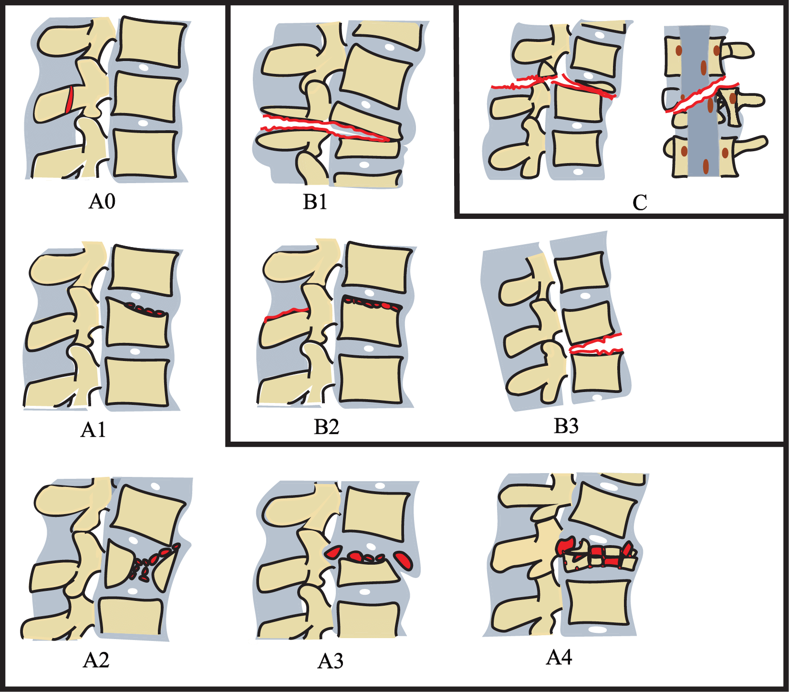
– Cơ chế sinh bệnh học và lực học chấn thương cột sống:
+ Cơ chế gấp và quá gấp chiếm từ 46% đến 79% các trường hợp chấn thương, đặc trưng bởi lực nén phía trước gây lún xẹp thân đốt sống và lực dãn phía sau làm đứt phức hợp dây chằng sau (PLC).
+ Cơ chế kéo dãn và quá ưỡn chiếm từ 20% đến 38% các trường hợp, đặc trưng bởi đứt dây chằng dọc trước (ALL), tổn thương đĩa đệm và có thể gây hội chứng tủy trung tâm ở người cao tuổi có hẹp ống sống nền.
+ Cơ chế xoay và trượt cắt chiếm khoảng 12% tổn thương, gây trượt đốt sống, trật khớp sống đơn bên hoặc hai bên, đứt hoàn toàn hệ thống dây chằng và có tỷ lệ tổn thương thần kinh rất cao.
+ Cơ chế nén dọc trục chiếm khoảng 4% các trường hợp, gây tổn thương kiểu vỡ văng (Burst fracture), gãy vỡ văng Jefferson (C1) hoặc tổn thương giọt nước do nén.
+ Các cơ chế phối hợp như gấp – xoay, nén – gấp hoặc kéo dãn – xoay làm gia tăng độ mất vững cơ học theo hệ thống phân loại AO Spine, TLICS và SLIC.
– Mối liên hệ giữa cơ chế chấn thương và tổn thương cấu trúc giải phẫu:
+ Phức hợp dây chằng sau (PLC) bao gồm dây chằng trên gai, dây chằng liên gai, dây chằng vàng và bao khớp mỏm khớp, là yếu tố then chốt quyết định độ vững cột sống khi chịu lực gấp hoặc kéo dãn.
+ Cột trước và cột giữa theo phân loại Denis chịu tác động chủ yếu của lực nén dọc trục và lực gấp, tổn thương vỡ cột giữa gây nguy cơ di lệch mảnh xương vỡ vào ống sống chèn ép tủy.
+ Lực xoay và trượt cắt làm mất liên tục toàn bộ dải dây chằng cố định và đĩa đệm, tạo ra tổn thương loại C theo phân loại AO Spine có chỉ định phẫu thuật cố định cấp cứu.
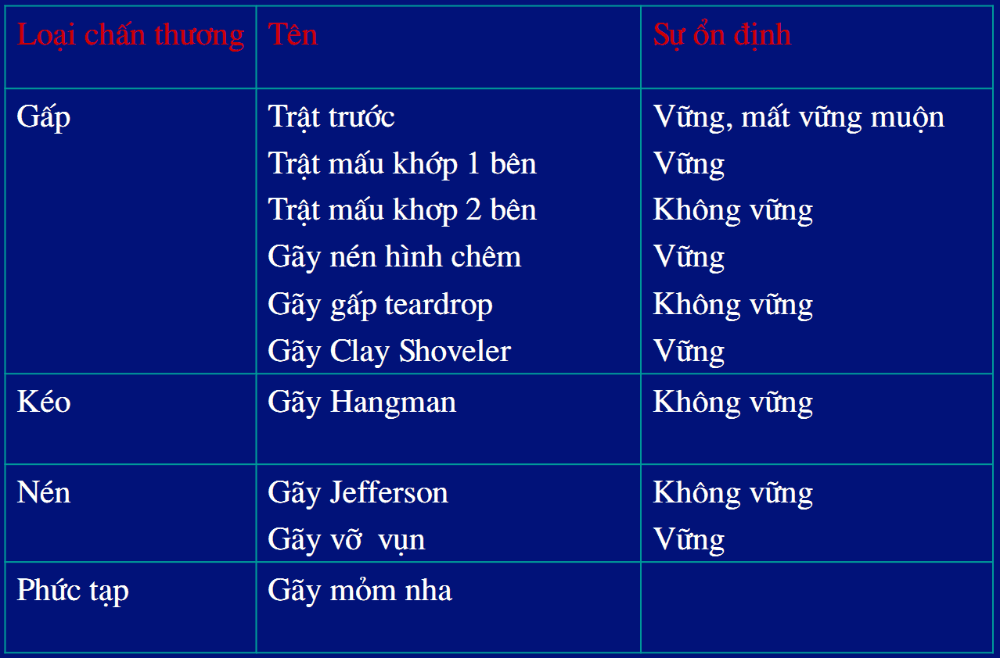
* Giải phẫu cột sống
– Đốt đội (C1): hình chiếc nhẫn gồm cung trước và cung sau, không có thân sống, hai khối bên rộng, chiều ngang lớn nhất trong tất cả đốt sống. Trong ống sống chứa tủy sống, mỏm nha và dây chằng ngang. Phần dày nhất của cung trước và cung sau C1 ở chính giữa là củ trước và củ sau. Mặt sau củ trước có diện tiếp khớp với mỏm nha của đốt trục (C2). Cung trước và cung sau mỏng dần về hai bên, nơi tiếp giáp với khối bên là vị trí mỏng nhất => dễ gãy khi chấn thương. Khối bên là nơi gặp nhau giữa cung trước và cung sau là phần dày nhất, phía ngoài có mỏm ngang, giữa mỏm ngang có lỗ ngang nơi động mạch đột sống chui qua đi vào sọ. Mặt trên và dưới khối bên có diện khớp tiếp khớp phía trên với lồi cầu xương chẩm, phía dưới với đốt trục C2.
– Đốt trục C2: giống hình con ngỗng, phía trước mặt trên thân sống nhô lên một mỏm gọi là mỏm nha, cao khoảng 15mm. Mặt trước đỉnh mỏm nha có diện tiếp khớp với mặt sau củ trước đốt đội C1, mặt sau có diện tiếp khớp với dây chằng ngang. Mặt trên thân sống ở hai bên có diện khớp tiếp khớp với đốt đội C1, mặt dưới có diện khớp tiếp khớp với C3.
– Khớp chẩm đội: là khớp hoạt dịch, cấu thành bởi lồi cầu xương chẩm và diện khớp trên đốt đội. Khớp này cho phép cúi ngửa 13 độ, nghiêng hai bên 8 độ, không có cử động quay.
– Khớp đội trục giữa: là khớp giữa mỏm nha đốt trục với cung trước đốt đội và dây chằng ngang đốt đội. Dây chằng chữ thập có hai phần: dây chằng ngang nối mặt trong của hai khối bên đốt đội, phần dọc nối bờ trên của dải ngang với xương chẩm và bờ dưới dải ngang với đốt trục. Dây chằng ngang chia ống sống đốt đội làm hai phần: phần trước chứa mỏm nha, phần sau chứa tủy sống. Ở trước dây chằng ngang, mỏm nha được cố định bởi hai dây chằng:
+ Dây chằng đỉnh nha: từ đỉnh mỏm nha đến bờ trước lỗ lớn xương chẩm.
+ Dây chằng cánh: ở hai bên, đi từ bờ trên đỉnh mỏm nha đến mặt trong lồi cầu xương chẩm.
– Khớp đội trục bên: là khớp hoạt dịch phẳng giữa diện khớp trên đốt trục với diện khớp dưới đốt đội. Các cử động của khớp đội – trục xảy ra đồng thởi cả 3 mặt khớp (2 khớp bên và 1 khớp giữa) và hầu như chỉ là cử động xoay. Tầm xoay quanh trục bình thường của khớp đội trục là 47 độ, nghiêng khoảng 10 độ.
© Chẩn Đoán Hình Ảnh Xray.vn
* Giải phẫu X-quang cột sống cổ
![Chú thích: 1. Cuống sống phải; 5. Cung sau C1; 9. Mảnh sống phải; 14. Mỏm ngang trái; 16. Khớp chẩm đội phải; 18. Mỏm ngang phải; 20. Mỏm gai; 21. Khối bên trái C1; 22. Mỏm nha; 23. Lỗ lớn; 24. Lồi cầu xương chẩm; 26. Xương chẩm; 27. Mỏm chũm xương thái dương; 31. Khớp đội trục phải; 34. Xương hàm dưới trái; 35. Răng hàm dưới; 37. Khớp chẩm đội trái; 38. Cuống sống trái; 39. Khối bên phải C1; 40. Mảnh sống trái; 41. Khớp đội trục trái; 50. Khoang quanh mỏm nha; 67. Xương hàm dưới phải; 71. Cung trước C1.](chan-thuong-cot-song_anh/2-147.jpg)
Chú thích: 1. Cuống sống phải; 5. Cung sau C1; 9. Mảnh sống phải; 14. Mỏm ngang trái; 16. Khớp chẩm đội phải; 18. Mỏm ngang phải; 20. Mỏm gai; 21. Khối bên trái C1; 22. Mỏm nha; 23. Lỗ lớn; 24. Lồi cầu xương chẩm; 26. Xương chẩm; 27. Mỏm chũm xương thái dương; 31. Khớp đội trục phải; 34. Xương hàm dưới trái; 35. Răng hàm dưới; 37. Khớp chẩm đội trái; 38. Cuống sống trái; 39. Khối bên phải C1; 40. Mảnh sống trái; 41. Khớp đội trục trái; 50. Khoang quanh mỏm nha; 67. Xương hàm dưới phải; 71. Cung trước C1.

Chú thích: 1. Cuống sống phải; 2. Đỉnh phổi phải; 3. Đoạn hẹp khí quản; 7. Khe khớp; 10. Cột khớp trái; 13. Thân đốt sống cổ; 14. Mỏm ngang trái; 15. ???; 18. Mỏm ngang phải; 20. Mỏm gai; 26. Xương chẩm; 27. Mỏm chũm xương thái dương; 32. Mỏm móc trái; 34. Xương hàm dưới trái; 38. Cuống sống trái; 44. ???; 47. Vôi hóa sụn giáp; 48. Đỉnh phổi trái; 52. Cột khớp phải; 58. Ống sống; 60. Xương đòn phải; 61. Xương đòn trái; 62. Xương sườn; 66. Diện khớp trái; 67. Xương hàm dưới phải; 68. Khí quản.
![Chú thích: 5. Cung sau C1; 7. Khe khớp; 8. Khoang sau hầu họng; 9. Mảnh sống phải; 10. Cột khớp trái; 11. Mỏm khớp dưới trái; 13. Thân đốt sống cổ; 14. Mỏm ngang trái; 17. Nắp thanh quản; 18. Mỏm ngang phải; 20. Mỏm gai; 21. Khối bên trái C1; 22. Mỏm nha; 23. Lỗ lớn; 26. Xương chẩm; 27. Mỏm chũm xương thái dương; 28. Yên bướm; 29. Khẩu cái cứng; 30. Xoang hàm; 33. Củ sau C1; 34. Xương hàm dưới trái; 35. Răng; 36. Khớp thái dương hàm; 40. Mảnh sống trái; 42. Khớp củ trước-mỏm nha; 43. Diện khớp phải; 45. Hầu; 46. Thực quản; 47. Vôi hóa sụn giáp; 51. Xương móng; 52. Cột khớp phải; 53. Mỏm khớp trên phải; 54. Phần trai xương thái dương; 55. Củ trước C1; 56. Mỏm khớp dưới phải; 57. Xoang bướm; 58. Ống sống; 59. Đường lam sống; 65. Mỏm khớp trên trái; 67. Xương hàm dưới phải; 68. Khí quản; 69. Mỏm lồi cầu xương hàm dưới; 70. Mặt dốc; 72. Sào bào xương chũm.](chan-thuong-cot-song_anh/6-50.jpg)
Chú thích: 5. Cung sau C1; 7. Khe khớp; 8. Khoang sau hầu họng; 9. Mảnh sống phải; 10. Cột khớp trái; 11. Mỏm khớp dưới trái; 13. Thân đốt sống cổ; 14. Mỏm ngang trái; 17. Nắp thanh quản; 18. Mỏm ngang phải; 20. Mỏm gai; 21. Khối bên trái C1; 22. Mỏm nha; 23. Lỗ lớn; 26. Xương chẩm; 27. Mỏm chũm xương thái dương; 28. Yên bướm; 29. Khẩu cái cứng; 30. Xoang hàm; 33. Củ sau C1; 34. Xương hàm dưới trái; 35. Răng; 36. Khớp thái dương hàm; 40. Mảnh sống trái; 42. Khớp củ trước-mỏm nha; 43. Diện khớp phải; 45. Hầu; 46. Thực quản; 47. Vôi hóa sụn giáp; 51. Xương móng; 52. Cột khớp phải; 53. Mỏm khớp trên phải; 54. Phần trai xương thái dương; 55. Củ trước C1; 56. Mỏm khớp dưới phải; 57. Xoang bướm; 58. Ống sống; 59. Đường lam sống; 65. Mỏm khớp trên trái; 67. Xương hàm dưới phải; 68. Khí quản; 69. Mỏm lồi cầu xương hàm dưới; 70. Mặt dốc; 72. Sào bào xương chũm.
* Giải phẫu X-quang cột sống thắt lưng
![Chú thích: 1. Thân đốt L2; 2. Diện khớp trên L5; 3. Diện khớp dưới L4; 4. Cuống sống L3 phải; 5. Cuống sống L3 trái; 6. Mảnh sống L3 phải; 7. Mảnh sống L3 trái; 8. Mỏm khớp trên L4 phải; 9. Mỏm khớp dưới L3 phải; 10. Cuống sống L1 phải; 11. Cuống sống L1 trái; 12. Khoang khớp mấu bên L4 phải; 13. Mỏm ngang L1 phải; 14. Mỏm ngang L1 trái; 15. Mỏm gai L4; 16. Mỏm gai L5; 17. Cánh xương cùng trái; 18. Cánh xương cùng phải; 19. Nền xương cùng; 20. Xương cùng 1; 21. Lỗ cùng; 22. Đường cung; 23. Ống cùng; 25. Khe khớp L3-L4; 26. Diện khớp L3/L4 phải; 27. Khớp cùng chậu sau trái; 28. Khớp cùng chậu trước trái; 30. Cơ thắt lưng chậu trái; 31. Thận phải; 32. Thận trái; 33. Lỗ tiếp hợp L4-L5; 34. Khoang gian mảnh sống; 35. Ống sống; 36. Xương sườn 12 phải; 37. Xương sườn 12 trái; 38. Thân đốt sống L3; 39. Mỏm khớp trên L4; 40. Mỏm khớp dưới L3; 41. Diện khớp L3-L4; 42. Khoang khớp mấu bên L5 phải; 43. Mỏm ngang L4; 44. Đường kính ống sống; 45. Khe khớp L2-L3; 46. Mỏm khớp trên L4 trái; 47. Mỏm ngang L4 trái; 48. Cuống sống L4 trái; 49. Khoang khớp mấu bên L4 trái; 50. Mỏm khớp dưới L4 trái; 51. Mảnh sống L4 trái; 52. Mỏm khớp dưới L4 phải; 53. Diện khớp L3-L4 trái; 54. Khoang khớp mấu bên L3 phải; 55. Mỏm ngang L3 phải; 56. Mỏm khớp trên L3 phải; 57. Thân đốt L5; 58. Mỏm ngang L5 trái; 59. Cuống sống L5 trái; 60. Khe khớp L5-S1; 61. Mỏm khớp dưới L5; 62. Cuống sống L5; 63. Mỏm khớp trên L5; 64. Lỗ tiếp hợp L5-S1; 65. Diện khớp L4/L5; 66. Đốt sống cùng 2.](chan-thuong-cot-song_anh/2-149.jpg)
Chú thích: 1. Thân đốt L2; 2. Diện khớp trên L5; 3. Diện khớp dưới L4; 4. Cuống sống L3 phải; 5. Cuống sống L3 trái; 6. Mảnh sống L3 phải; 7. Mảnh sống L3 trái; 8. Mỏm khớp trên L4 phải; 9. Mỏm khớp dưới L3 phải; 10. Cuống sống L1 phải; 11. Cuống sống L1 trái; 12. Khoang khớp mấu bên L4 phải; 13. Mỏm ngang L1 phải; 14. Mỏm ngang L1 trái; 15. Mỏm gai L4; 16. Mỏm gai L5; 17. Cánh xương cùng trái; 18. Cánh xương cùng phải; 19. Nền xương cùng; 20. Xương cùng 1; 21. Lỗ cùng; 22. Đường cung; 23. Ống cùng; 25. Khe khớp L3-L4; 26. Diện khớp L3/L4 phải; 27. Khớp cùng chậu sau trái; 28. Khớp cùng chậu trước trái; 30. Cơ thắt lưng chậu trái; 31. Thận phải; 32. Thận trái; 33. Lỗ tiếp hợp L4-L5; 34. Khoang gian mảnh sống; 35. Ống sống; 36. Xương sườn 12 phải; 37. Xương sườn 12 trái; 38. Thân đốt sống L3; 39. Mỏm khớp trên L4; 40. Mỏm khớp dưới L3; 41. Diện khớp L3-L4; 42. Khoang khớp mấu bên L5 phải; 43. Mỏm ngang L4; 44. Đường kính ống sống; 45. Khe khớp L2-L3; 46. Mỏm khớp trên L4 trái; 47. Mỏm ngang L4 trái; 48. Cuống sống L4 trái; 49. Khoang khớp mấu bên L4 trái; 50. Mỏm khớp dưới L4 trái; 51. Mảnh sống L4 trái; 52. Mỏm khớp dưới L4 phải; 53. Diện khớp L3-L4 trái; 54. Khoang khớp mấu bên L3 phải; 55. Mỏm ngang L3 phải; 56. Mỏm khớp trên L3 phải; 57. Thân đốt L5; 58. Mỏm ngang L5 trái; 59. Cuống sống L5 trái; 60. Khe khớp L5-S1; 61. Mỏm khớp dưới L5; 62. Cuống sống L5; 63. Mỏm khớp trên L5; 64. Lỗ tiếp hợp L5-S1; 65. Diện khớp L4/L5; 66. Đốt sống cùng 2.
![Chú thích: 1. Thân đốt L2; 2. Diện khớp trên L5; 3. Diện khớp dưới L4; 4. Cuống sống L3 phải; 5. Cuống sống L3 trái; 6. Mảnh sống L3 phải; 7. Mảnh sống L3 trái; 8. Mỏm khớp trên L4 phải; 9. Mỏm khớp dưới L3 phải; 10. Cuống sống L1 phải; 11. Cuống sống L1 trái; 12. Khoang khớp mấu bên L4 phải; 13. Mỏm ngang L1 phải; 14. Mỏm ngang L1 trái; 15. Mỏm gai L4; 16. Mỏm gai L5; 17. Cánh xương cùng trái; 18. Cánh xương cùng phải; 19. Nền xương cùng; 20. Xương cùng 1; 21. Lỗ cùng; 22. Đường cung; 23. Ống cùng; 25. Khe khớp L3-L4; 26. Diện khớp L3/L4 phải; 27. Khớp cùng chậu sau trái; 28. Khớp cùng chậu trước trái; 30. Cơ thắt lưng chậu trái; 31. Thận phải; 32. Thận trái; 33. Lỗ tiếp hợp L4-L5; 34. Khoang gian mảnh sống; 35. Ống sống; 36. Xương sườn 12 phải; 37. Xương sườn 12 trái; 38. Thân đốt sống L3; 39. Mỏm khớp trên L4; 40. Mỏm khớp dưới L3; 41. Diện khớp L3-L4; 42. Khoang khớp mấu bên L5; 43. Mỏm ngang L4; 44. Đường kính ống sống; 45. Khe khớp L2-L3; 46. Mỏm khớp trên L4 trái; 47. Mỏm ngang L4 trái; 48. Cuống sống L4 trái; 49. Khoang khớp mấu bên L4 trái; 50. Mỏm khớp dưới L4 trái; 51. Mảnh sống L4 trái; 52. Mỏm khớp dưới L4 phải; 53. Diện khớp L3-L4 trái; 54. Khoang khớp mấu bên L3 phải; 55. Mỏm ngang L3 phải; 56. Mỏm khớp trên L3 phải; 57. Thân đốt L5; 58. Mỏm ngang L5 trái; 59. Cuống sống L5 trái; 60. Khe khớp L5-S1; 61. Mỏm khớp dưới L5; 62. Cuống sống L5; 63. Mỏm khớp trên L5; 64. Lỗ tiếp hợp L5-S1; 65. Diện khớp L4/L5; 66. Đốt sống cùng 2.](chan-thuong-cot-song_anh/4-123.jpg)
Chú thích: 1. Thân đốt L2; 2. Diện khớp trên L5; 3. Diện khớp dưới L4; 4. Cuống sống L3 phải; 5. Cuống sống L3 trái; 6. Mảnh sống L3 phải; 7. Mảnh sống L3 trái; 8. Mỏm khớp trên L4 phải; 9. Mỏm khớp dưới L3 phải; 10. Cuống sống L1 phải; 11. Cuống sống L1 trái; 12. Khoang khớp mấu bên L4 phải; 13. Mỏm ngang L1 phải; 14. Mỏm ngang L1 trái; 15. Mỏm gai L4; 16. Mỏm gai L5; 17. Cánh xương cùng trái; 18. Cánh xương cùng phải; 19. Nền xương cùng; 20. Xương cùng 1; 21. Lỗ cùng; 22. Đường cung; 23. Ống cùng; 25. Khe khớp L3-L4; 26. Diện khớp L3/L4 phải; 27. Khớp cùng chậu sau trái; 28. Khớp cùng chậu trước trái; 30. Cơ thắt lưng chậu trái; 31. Thận phải; 32. Thận trái; 33. Lỗ tiếp hợp L4-L5; 34. Khoang gian mảnh sống; 35. Ống sống; 36. Xương sườn 12 phải; 37. Xương sườn 12 trái; 38. Thân đốt sống L3; 39. Mỏm khớp trên L4; 40. Mỏm khớp dưới L3; 41. Diện khớp L3-L4; 42. Khoang khớp mấu bên L5; 43. Mỏm ngang L4; 44. Đường kính ống sống; 45. Khe khớp L2-L3; 46. Mỏm khớp trên L4 trái; 47. Mỏm ngang L4 trái; 48. Cuống sống L4 trái; 49. Khoang khớp mấu bên L4 trái; 50. Mỏm khớp dưới L4 trái; 51. Mảnh sống L4 trái; 52. Mỏm khớp dưới L4 phải; 53. Diện khớp L3-L4 trái; 54. Khoang khớp mấu bên L3 phải; 55. Mỏm ngang L3 phải; 56. Mỏm khớp trên L3 phải; 57. Thân đốt L5; 58. Mỏm ngang L5 trái; 59. Cuống sống L5 trái; 60. Khe khớp L5-S1; 61. Mỏm khớp dưới L5; 62. Cuống sống L5; 63. Mỏm khớp trên L5; 64. Lỗ tiếp hợp L5-S1; 65. Diện khớp L4/L5; 66. Đốt sống cùng 2.
![Chú thích: 1. Thân đốt L2; 2. Diện khớp trên L5; 3. Diện khớp dưới L4; 4. Cuống sống L3 phải; 5. Cuống sống L3 trái; 6. Mảnh sống L3 phải; 7. Mảnh sống L3 trái; 8. Mỏm khớp trên L4 phải; 9. Mỏm khớp dưới L3 phải; 10. Cuống sống L1 phải; 11. Cuống sống L1 trái; 12. Khoang khớp mấu bên L4 phải; 13. Mỏm ngang L1 phải; 14. Mỏm ngang L1 trái; 15. Mỏm gai L4; 16. Mỏm gai L5; 17. Cánh xương cùng trái; 18. Cánh xương cùng phải; 19. Nền xương cùng; 20. Xương cùng 1; 21. Lỗ cùng; 22. Đường cung; 23. Ống cùng; 25. Khe khớp L3-L4; 26. Diện khớp L3/L4 phải; 27. Khớp cùng chậu sau trái; 28. Khớp cùng chậu trước trái; 30. Cơ thắt lưng chậu trái; 31. Thận phải; 32. Thận trái; 33. Lỗ tiếp hợp L4-L5; 34. Khoang gian mảnh sống; 35. Ống sống; 36. Xương sườn 12 phải; 37. Xương sườn 12 trái; 38. Thân đốt sống L3; 39. Mỏm khớp trên L4; 40. Mỏm khớp dưới L3; 41. Diện khớp L3-L4; 42. Khoang khớp mấu bên L5; 43. Mỏm ngang L4; 44. Đường kính ống sống; 45. Khe khớp L2-L3; 46. Mỏm khớp trên L4 trái; 47. Mỏm ngang L4 trái; 48. Cuống sống L4 trái; 49. Khoang khớp mấu bên L4 trái; 50. Mỏm khớp dưới L4 trái; 51. Mảnh sống L4 trái; 52. Mỏm khớp dưới L4 phải; 53. Diện khớp L3-L4 trái; 54. Khoang khớp mấu bên L3 phải; 55. Mỏm ngang L3 phải; 56. Mỏm khớp trên L3 phải; 57. Thân đốt L5; 58. Mỏm ngang L5 trái; 59. Cuống sống L5 trái; 60. Khe khớp L5-S1; 61. Mỏm khớp dưới L5; 62. Cuống sống L5; 63. Mỏm khớp trên L5; 64. Lỗ tiếp hợp L5-S1; 65. Diện khớp L4/L5; 66. Đốt sống cùng 2.](chan-thuong-cot-song_anh/6-51.jpg)
Chú thích: 1. Thân đốt L2; 2. Diện khớp trên L5; 3. Diện khớp dưới L4; 4. Cuống sống L3 phải; 5. Cuống sống L3 trái; 6. Mảnh sống L3 phải; 7. Mảnh sống L3 trái; 8. Mỏm khớp trên L4 phải; 9. Mỏm khớp dưới L3 phải; 10. Cuống sống L1 phải; 11. Cuống sống L1 trái; 12. Khoang khớp mấu bên L4 phải; 13. Mỏm ngang L1 phải; 14. Mỏm ngang L1 trái; 15. Mỏm gai L4; 16. Mỏm gai L5; 17. Cánh xương cùng trái; 18. Cánh xương cùng phải; 19. Nền xương cùng; 20. Xương cùng 1; 21. Lỗ cùng; 22. Đường cung; 23. Ống cùng; 25. Khe khớp L3-L4; 26. Diện khớp L3/L4 phải; 27. Khớp cùng chậu sau trái; 28. Khớp cùng chậu trước trái; 30. Cơ thắt lưng chậu trái; 31. Thận phải; 32. Thận trái; 33. Lỗ tiếp hợp L4-L5; 34. Khoang gian mảnh sống; 35. Ống sống; 36. Xương sườn 12 phải; 37. Xương sườn 12 trái; 38. Thân đốt sống L3; 39. Mỏm khớp trên L4; 40. Mỏm khớp dưới L3; 41. Diện khớp L3-L4; 42. Khoang khớp mấu bên L5; 43. Mỏm ngang L4; 44. Đường kính ống sống; 45. Khe khớp L2-L3; 46. Mỏm khớp trên L4 trái; 47. Mỏm ngang L4 trái; 48. Cuống sống L4 trái; 49. Khoang khớp mấu bên L4 trái; 50. Mỏm khớp dưới L4 trái; 51. Mảnh sống L4 trái; 52. Mỏm khớp dưới L4 phải; 53. Diện khớp L3-L4 trái; 54. Khoang khớp mấu bên L3 phải; 55. Mỏm ngang L3 phải; 56. Mỏm khớp trên L3 phải; 57. Thân đốt L5; 58. Mỏm ngang L5 trái; 59. Cuống sống L5 trái; 60. Khe khớp L5-S1; 61. Mỏm khớp dưới L5; 62. Cuống sống L5; 63. Mỏm khớp trên L5; 64. Lỗ tiếp hợp L5-S1; 65. Diện khớp L4/L5; 66. Đốt sống cùng 2.
II. Mất vững cột sống
– Thuyết 3 cột Denis và ứng dụng trong chấn thương cột sống:
+ Cột trước bao gồm dây chằng dọc trước, 2/3 trước thân đốt sống và 2/3 trước đĩa đệm gian sống.
+ Cột giữa bao gồm dây chằng dọc sau, 1/3 sau thân đốt sống và 1/3 sau đĩa đệm gian sống, đóng vai trò bản lề cơ học bảo vệ tủy sống.
+ Cột sau bao gồm cuống sống, cấu trúc cung sau, dây chằng vàng, mỏm khớp, bao khớp liên mấu, dây chằng liên gai và dây chằng trên gai cấu thành phức hợp dây chằng sau (PLC).
+ Thuyết Denis áp dụng hiệu quả cho cột sống ngực – thắt lưng và cột sống cổ thấp (C3-C7) do tính tương đồng về mặt giải phẫu cơ sinh học.
– Nguyên lý mất vững cơ học theo Denis và tích hợp các thang điểm quốc tế:
+ Mất vững xuất hiện khi tổn thương từ 2 cột tiếp giáp trở lên (cột trước – cột giữa hoặc cột giữa – cột sau) hoặc tổn thương đồng thời cả 3 cột.
+ Tổn thương cột giữa có vai trò then chốt vì nguy cơ di lệch mảnh xương vỡ vào ống sống gây tổn thương thần kinh thứ phát.
+ Tích hợp phân loại AO Spine, thang điểm TLICS (ngực – thắt lưng) và SLIC (cổ thấp) giúp trắc lượng chuẩn xác chỉ định phẫu thuật dựa trên hình thái tổn thương, trạng thái phức hợp dây chằng sau (PLC) và lâm sàng thần kinh.
– Phân loại độ mất vững cột sống và định hướng thái độ điều trị:
+ Độ I hay mất vững cơ học: tổn thương từ 2 cột trở lên, tổn thương cột giữa có mảnh xương vỡ di lệch hoặc có nguy cơ biến dạng gù cột sống tiến triển.
+ Độ II hay mất vững thần kinh: chấn thương có tổn thương thần kinh đi kèm do chèn ép tủy sống, rễ thần kinh hoặc hội chứng đuôi ngựa.
+ Độ III hay mất vững hỗn hợp: kết hợp đồng thời mất vững cơ học độ I và mất vững thần kinh độ II, có chỉ định phẫu thuật nắn chỉnh, giải áp và cố định cột sống cấp cứu.
– Tiêu chuẩn chẩn đoán hình ảnh học mất vững cột sống trên MDCT 3D và MRI:
+ Trên cắt lớp vi tính (MDCT): xẹp trên 50% chiều cao thân đốt sống, góc gù cột sống trên 20 độ, rộng khoảng cách gian cuống sống hoặc gian mỏm gai, trượt đốt sống trên 2.5 mm, vỡ cuống sống hoặc mỏm khớp hai bên.
+ Trên cộng hưởng từ (MRI): đứt rách dây chằng dọc sau, phù nề hoặc đứt hoàn toàn dây chằng liên gai/trên gai đại diện cho phức hợp dây chằng sau (PLC) trên chuỗi xung STIR và T2W xóa mỡ, thoát vị đĩa đệm cấp tính gây chèn ép tủy.
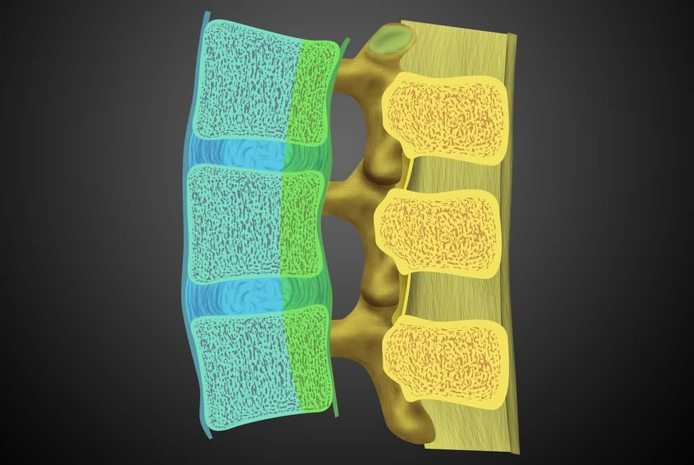
* Đường cột sống
– Cấu trúc và ý nghĩa 4 đường căn chỉnh cột sống cổ trên phim nghiêng:
+ Đường bờ trước thân đốt sống (đường đốt sống trước) nối liên tục bờ trước các thân đốt sống cổ, đánh giá tính vẹn toàn của dây chằng dọc trước (ALL) và mặt trước cột sống.
+ Đường bờ sau thân đốt sống (đường George hay đường đốt sống sau) nối liên tục bờ sau các thân đốt sống, đại diện cho bờ trước ống sống và đường đi của dây chằng dọc sau (PLL).
+ Đường mảnh – gai sống (đường lam sống / spinolaminar line) nối các điểm tiếp giáp giữa mảnh sống và mỏm gai, đại diện cho bờ sau ống sống và xác định đường kính trước sau ống sống.
+ Đường đỉnh mỏm gai (đường gai sau) nối đỉnh các mỏm gai, đánh giá sự đồng nhất của khoảng cách gian mỏm gai và tính vẹn toàn của phức hợp dây chằng sau (PLC).
– Tiêu chí đánh giá hình thái liên tục và các dấu hiệu bất thường:
+ Ở trạng thái sinh lý, 4 đường phải tạo thành các đường cong uốn nhẹ về phía trước mềm mại, liên tục và hoàn toàn không có dấu hiệu tạo bậc thang (step-off) hay gập góc.
+ Bất kỳ sự gián đoạn, mất liên tục hay di lệch bậc thang nào trên 1 đến 2 mm đều là bằng chứng của chấn thương gãy xương, trật khớp mỏm khớp hoặc đứt hệ thống dây chằng cố định.
+ Sự mất liên tục đường George làm thu hẹp đường kính trước sau ống sống xuống dưới 13 mm (chỉ số Torg-Pavlov < 0.8), cảnh báo nguy cơ chèn ép tủy sống cấp tính.
– Cạm bẫy chẩn đoán và phân biệt hình ảnh học:
+ Hiện tượng bán trật khớp giả C2-C3 ở trẻ em (pseudosubluxation) do tính chất lỏng lẻo dây chằng sinh lý, phân biệt với trật khớp thật sự nhờ đường Swischuk (đường nối từ mảnh C1 đến mảnh C3, nếu đường mảnh C2 di lệch trước đường này dưới 2 mm là sinh lý).
+ Biến đổi thoái hóa gây phì đại mỏm khớp hoặc gai xương bờ sau thân đốt ở người cao tuổi có thể giả mất liên tục đường cột sống, đòi hỏi đối chiếu trên cắt lớp vi tính đa dãy (MDCT).
III. Phân loại
1. Cột sống cổ cao
– Đặc điểm dịch tễ học và giải phẫu chức năng vùng C1-C2:
+ Chấn thương cột sống cổ cao (C1-C2) chiếm khoảng 25% tổng số ca chấn thương cột sống cổ, thường gặp nhất ở nhóm tuổi trẻ từ 15 đến 30 tuổi và nhóm người cao tuổi ngã thấp.
+ Tỷ lệ tử vong cao lên đến 17% do nguy cơ tổn thương hành – tủy cổ cao, trung tâm hô hấp và mạch máu đốt sống.
+ Khớp chẩm – C1 – C2 có độ di động sinh lý lớn nhất cột sống nhưng phụ thuộc hoàn toàn vào hệ thống dây chằng cố định (dây chằng cánh, dây chằng dọc, dây chằng ngang C1).
– Các hình thái gãy xương đặc thù vùng C1-C2 và phân loại quốc tế:
+ Trật khớp chẩm – cổ (atlanto-occipital dissociation) do xé rách hệ thống dây chằng chẩm – đội, đánh giá bằng chỉ số CCI (condyle-C1 interval) trên cắt lớp vi tính lớn hơn 1.5 mm.
+ Gãy C1 hay gãy Jefferson xuất hiện do cơ chế nén dọc trục gây vỡ vòng xương C1, đánh giá sự di lệch mấu bên C1 ra ngoài C2 trên phim X-quang há miệng hoặc cắt lớp vi tính (dấu hiệu Rule of Spence trên 6.9 mm thể hiện đứt dây chằng ngang C1).
+ Gãy mỏm nha C2 (odontoid fracture) phân loại theo Anderson và D’Alonzo gồm type I (gãy đỉnh mỏm nha), type II (gãy eo mỏm nha có tỷ lệ khớp giả cao nhất) và type III (gãy lan vào thân C2).
+ Gãy Hangman C2 hay gãy vỡ eo C2 phân loại theo Levine-Edwards (dựa trên Effendi) gồm type I (di lệch dưới 3 mm, không gập góc), type II (di lệch trên 3 mm, gập góc), type IIA (gập góc nặng không di lệch) và type III (kèm trật khớp mỏm khớp C2-C3).
+ Trật khớp xoay đội – trục (atlanto-axial rotatory fixation) phân loại theo Fielding và Hawkins (type I đến IV) thường gặp ở trẻ em sau chấn thương hoặc nhiễm trùng vùng tai mũi họng.
– Chiến lược hình ảnh học đa phương thức và cạm bẫy chẩn đoán:
+ Cắt lớp vi tính đa dãy (MDCT) dựng hình 3D là phương tiện lựa chọn hàng đầu cấp cứu giúp bộc lộ chi tiết các đường gãy ẩn, di lệch mấu bên và mảnh xương tự do.
+ Cộng hưởng từ (MRI) chỉ định bắt buộc khi có tổn thương thần kinh, giúp đánh giá tính vẹn toàn của dây chằng ngang C1, dây chằng cánh, đĩa đệm C2-C3 và bộc lộ phù tủy hay tụ máu hành – tủy cổ.
+ Cạm bẫy chẩn đoán gồm mầm hóa xương bất thường (os odontoideum, os terminale), khe khớp sinh lý ở trẻ em dễ nhầm với đường gãy, hoặc vôi hóa dây chằng/xơ cứng mạch máu do thoái hóa.
* Vỡ lồi cầu xương chẩm
– Gãy lồi cầu chẩm là những chấn thương hiếm gặp, 1-5% chấn thương cột sống cổ., thường xảy ra do chấn thương lực tác động mạnh. Chúng được coi là một loại gãy xương nền sọ quan trọng do có thể phối hợp với sự phân ly sọ-cổ.
– Được báo cáo ở 3-4% bệnh nhân bị chấn thương sọ não từ trung bình đến nặng.
– Phân loại (Anderson & Montesano)
+ Loại I (3-13%): vỡ lồi cầu không di lệch do nén theo trục dọc. Hình thái: vỡ vụn lồi cầu với ít hoặc không có sự dịch chuyển của các mảnh vỡ vào lỗ lớn. Cơ chế: nén trục dọc của sọ lên đốt sống cổ.
+ Loại II (22-54%): Gãy lồi cầu chẩm kiểu nền sọ. Hình thái: gãy lồi cầu mở rộng ra ngoài lồi cầu đến các vị trí khác ở nền sọ sau. Cơ chế: lực trực tiếp vào phần dưới của sọ.
+ Loại III (33-75%): Gãy lồi cầu chẩm kiểu kéo đứt. Hình thái: mảnh gãy nhỏ của lồi cầu chẩm dưới trong bị dịch chuyển về phía đỉnh đốt sống. Cơ chế: xoay và/hoặc uốn cong đối diện.
– Đặc điểm hình ảnh:
+ Đánh giá tính toàn vẹn của lồi cầu chẩm: Gãy vụn: gợi ý va đập. Mảnh gãy cong dọc theo lồi cầu trong: gợi ý kéo đứt, có thể tổn thương dây chằng
+ Đánh giá khớp chẩm-đội và khớp đội-trục (C1/C2).
+ Đánh giá tình trạng hẹp ống sống
+ Đánh giá xuất huyết tủy cổ
+ Gãy phối hợp: xương nền sọ, đốt sống cổ C1,C2, trật khớp chẩm đội.
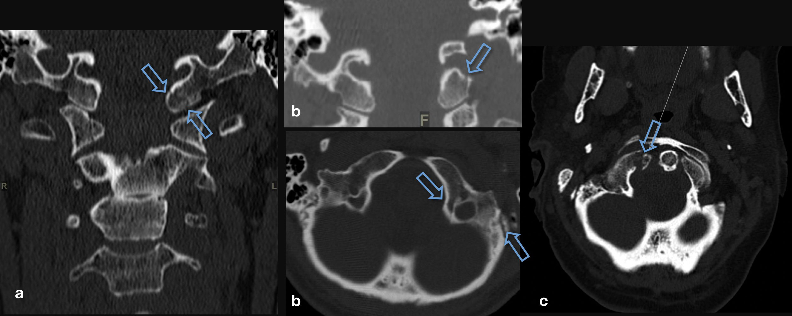
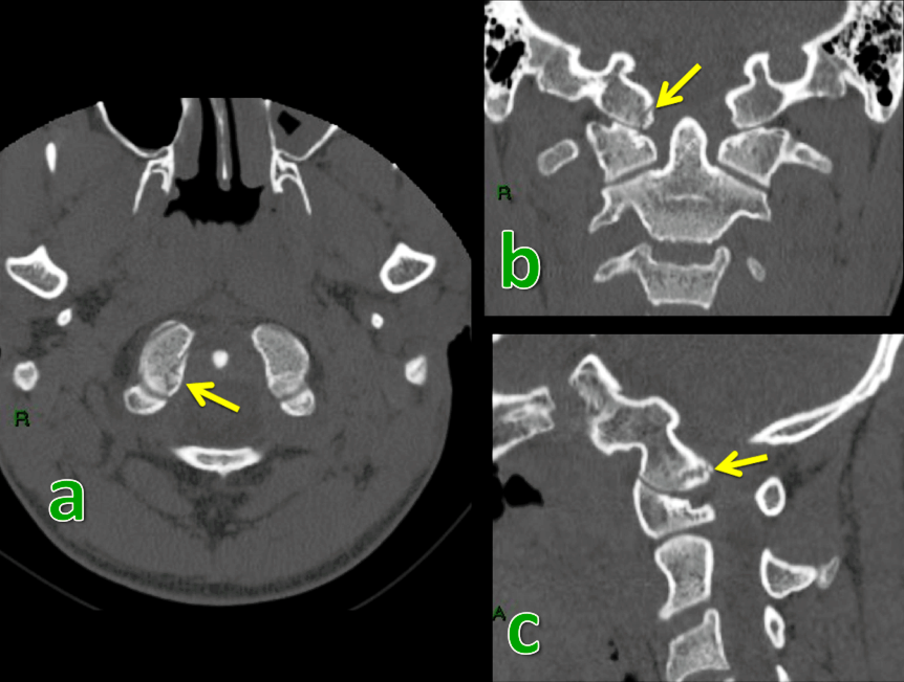
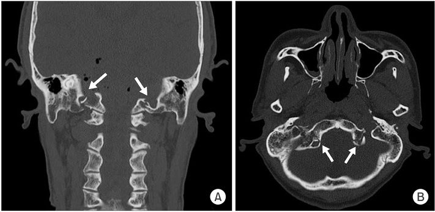
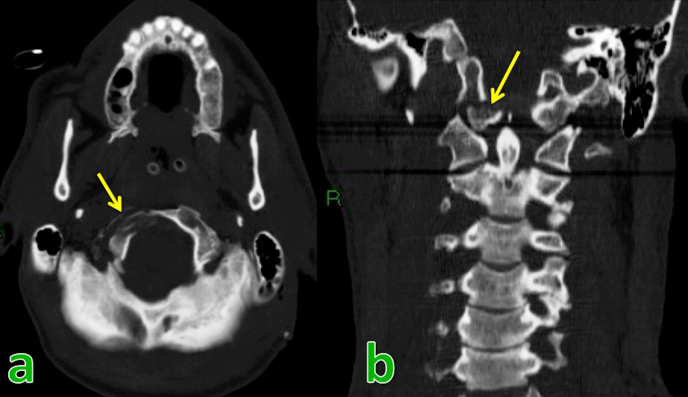
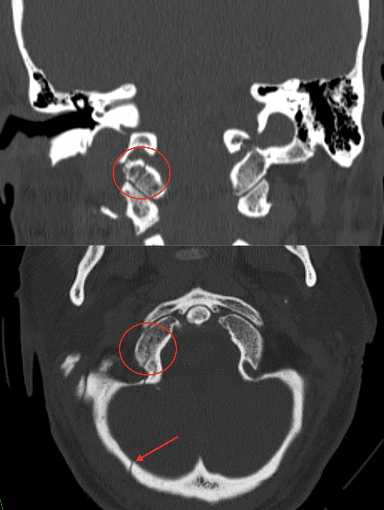
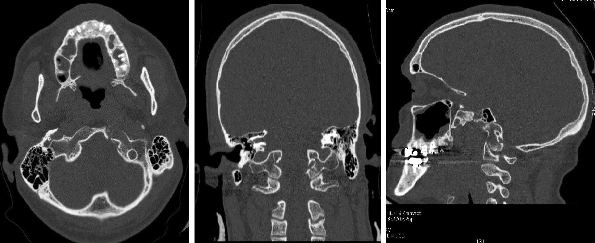
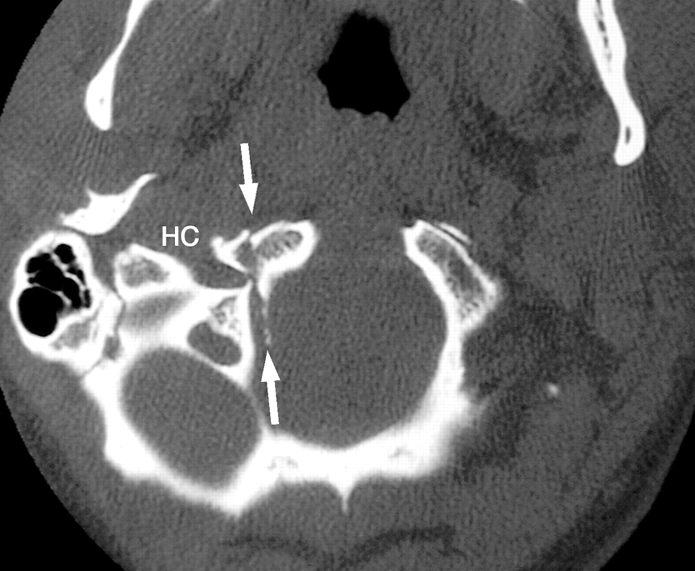
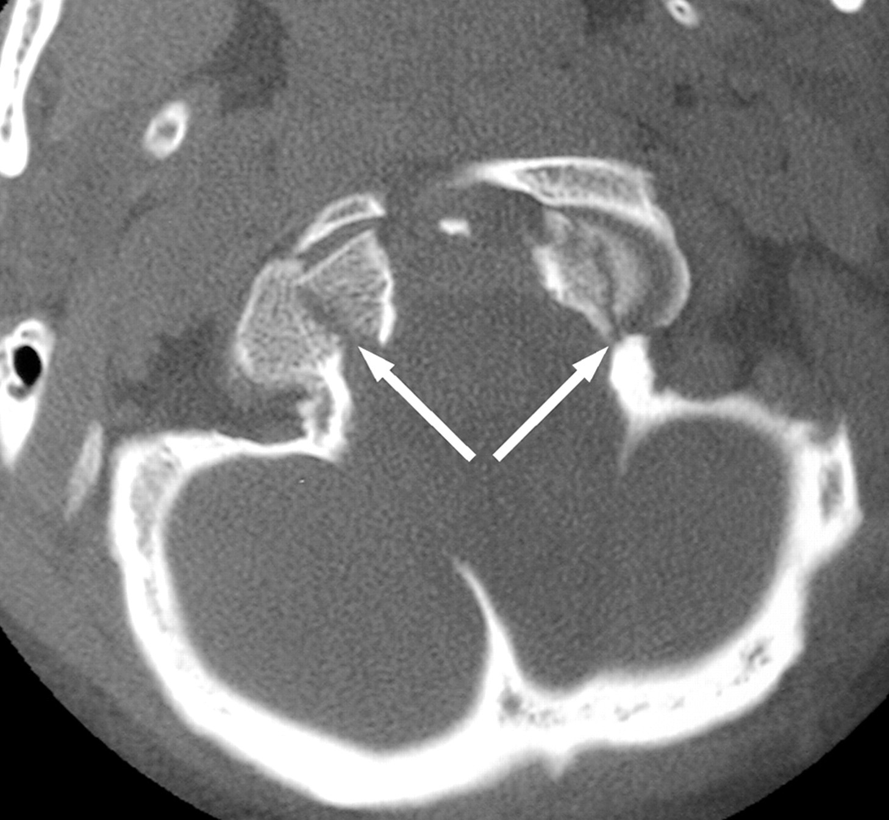
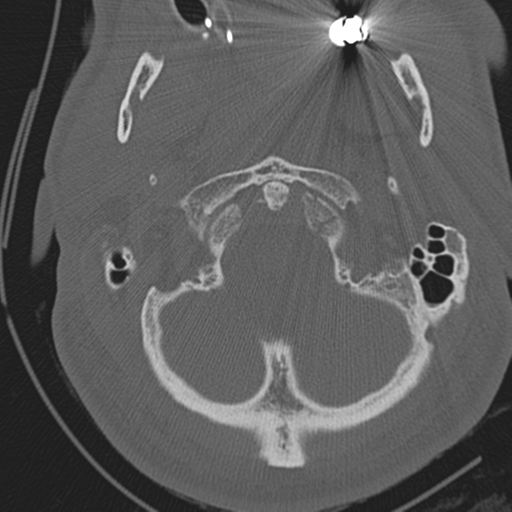
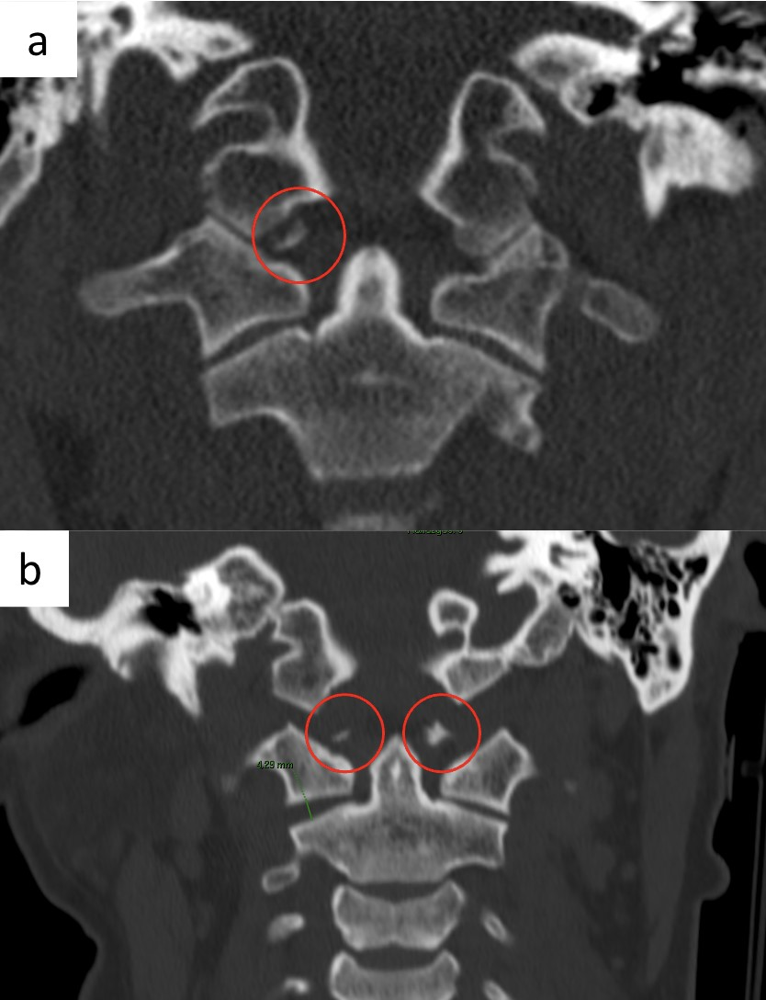
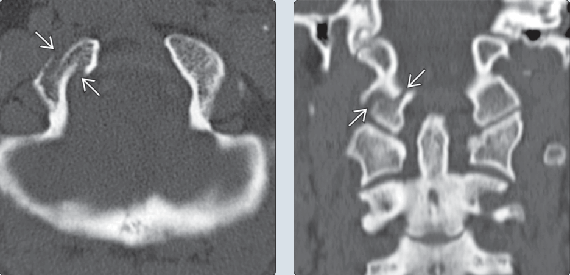
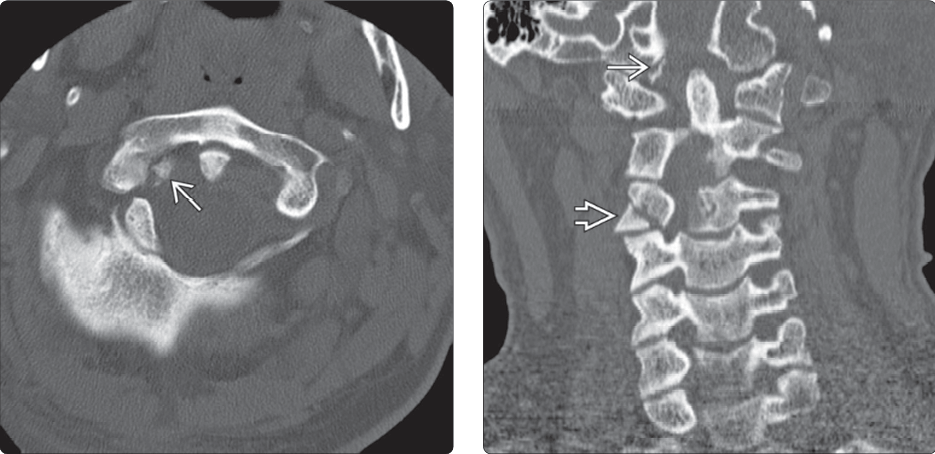
=> Case lâm sàng 1:
=> Case lâm sàng 2:
=> Case lâm sàng 3: type I
=> Case lâm sàng 4: type III
– Tổn thương phối hợp :Có thể phối hợp chấn thương cột sống cổ: gãy mỏm nha, vỡ C1,C2, trật khớp chẩm đội.
* Trật khớp chẩm đội
– Trật khớp chẩm đội (Atlanto occipital dissociation) được báo cáo lần đầu tiên bởi Charles Bell vào năm 1817 khi giải phẫu tử thi, mô tả lần đầu tiên trên X-quang năm 1962, trên cắt lớp vi tính năm 1983.
– Thương tổn hiếm gặp, tỷ lệ tử vong cao. Tần suất cao hơn ở trẻ em bị tai nạn giao thông.
– Cơ chế tổn thương là do ưỡn quá mức gây tổn thương dây chằng chẩm – đốt đội, dây chằng dọc trước và dọc sau, dây chằng nối mỏm nha với rãnh trượt. Lồi cầu chẩm trượt trên C1 ra trước hoặc ra sau chèn vào hành tủy gây ngừng thở. Đôi khi tổn thương do phối hợp cơ thế gập và xoay.
– Phân loại Traynelis:
+ Type I : trật lồi cầu chẩm ra trước so với C1 (thường gặp nhất)
+ Type II : trật lồi cầu chẩm lên trên theo trục dọc
+ Type III : trật lồi cầu chẩm ra sau so với C1
=> Chẩn đoán X-quang & cắt lớp vi tính:
– Chỉ số Power: một phép đo mối quan hệ của các xương tạo thành lỗ lớn (basion và opisthion) với đốt sống cổ. Tỷ lệ này được tính bằng khoảng cách giữa bờ trước lỗ chẩm và bờ trước cung sau C1 với khoảng cách giữa bờ sau lỗ chẩm và bờ sau cung trước C1.
– Bình thường chỉ số Power < 1 trên phim X-quang thường và <0.9 trên CT, nghi ngờ tổn thương trật khớp chẩm đội khi chỉ số Power > 1. Chỉ số này không đặc hiệu trong các trường hợp trật lồi cầu lên trên theo trục dọc (type 2) hoặc trật ra sau.
=> Case lâm sàng 1:
=> Case lâm sàng 2:
– Chỉ số BDI (Basion dens interval):
+ Khoảng cách giữa phần dưới cùng bờ trước lỗ chẩm và đỉnh mỏm nha.
+ Bình thường ở người lớn: < 12mm trên X-quang và < 8.5mm trên cắt lớp vi tính.
+ Trên cắt lớp khi chỉ số BDI > 12mm (ở người lớn) và > 10mm (ở trẻ em) gợi ý trật khớp chẩm-đội.
=> Case lâm sàng 1:
=> Case lâm sàng 2:
=> Case lâm sàng 3:
– Chỉ số BAI (Basion axial interval):
+ Khoảng cách ngang giữa bờ trước lỗ chẩm và đường tiếp tuyến với bờ sau C2.
+ Bình thường ở người lớn: +12 mm đến – 4 mm; Bình thường ở trẻ em: +12 mm đến 0 mm.
+ Chỉ số BAI nên được đánh giá ở cả 2 tư thế cúi và ưỡn, nếu chỉ số này thay đổi > 1-2mm => trượt về phía trước hoặc phía sau của khớp chẩm đội.
+ Trên cắt lớp vi tính chỉ số này không đáng tin cậy do đường viền không đều của bờ sau thân đốt sống C2, không xác định chính xác trục trung gian dẫn tới kết quả sai lệch – khoảng cách giao động từ 8.7 mm đến 26mm ở các đối tượng bình thường.
– Đường Wackenheim:
+ Đường kéo dài dọc theo bờ sau bản dốc và thường kéo dài qua đỉnh sau của mỏm nha.
+ Trường hợp lún nền sọ, mỏm nha nằm trên đường này.
+ Trường hợp trật khớp chẩm đội ra sau, đường này sẽ kéo dài phía sau mỏm nha.
+ Trường hợp trật khớp chẩm đội ra trước, đường này sẽ kéo dài qua trung tâm của mỏm nha hoặc xa hơn phía trước.
– X-quang tư thế há miệng (Open Mouth Radiograph) & X-quang cột sống cổ nghiêng & Cắt lớp vi tính:
+ Di lệch mỏm lồi cầu chẩm ra khỏi diện khớp trên của khối bên C1: > 4 mm được coi là tiêu chuẩn chẩn đoán.
+ Có thể chỉ mở rộng khe khớp ở 1 bên.
=> Case lâm sàng 1:
=> Case lâm sàng 2:
=> Case lâm sàng 3:
* Vỡ đốt đội C1
– Tổn thương vỡ C1 gặp trong 1-2% các tổn thương gãy cột sống và chiếm tỷ lệ 15% gãy cột sống cổ. Năm 1882 Cooper lần đầu tiên mô tả gãy C1 sau khi mổ tử thi.
– Gãy Jefferson:
+ Gãy vỡ vụn nhiều mảnh của C1, lần đầu tiên được mô tả bởi Jefferson năm 1920.
+ Gãy này gây nên bởi một lực ép thẳng đứng theo trục của đầu, tạo nên một lực trực tiếp hướng xuống dưới lên sọ, đẩy các lồi cầu chẩm vào các khối bên của C1, khiến các khối bên của cung C1 bị đẩy ra phía ngoài.
+ Loại chấn thương này có thể xảy ra nếu một vật nặng rơi trên đầu của bệnh nhân hay nếu một bệnh nhân té ngã và đâm vào đỉnh đầu hay do nhảy lao đầu xuống.
+ Gãy xương Jefferson thường không liên quan đến các thiếu hụt thần kinh, mặc dù chấn thương tủy sống có thể xảy ra nếu một mảnh gãy bị đẩy ngược nén ép tủy sống cổ, nhưng gãy Jefferson là một gãy không ổn định và cần được bất động tức thời.
+ Liên quan: 50% liên quan đến các chấn thương cột sống cổ khác, 33% liên quan đến gãy xương C2, 25-50% trẻ em có chấn thương sọ đồng thời.
=> X-quang cột sống cổ nghiêng & CLVT: đường vỡ cung trước, cung sau C1 (thường thấy rõ hơn). Đường liên mảnh sống mất thẳng hàng. Nếu có chấn thương dây chằng ngang, khoảng cách ADI sẽ tăng lên.


=> X-quang tư thế há miệng (Open Mouth Radiograph) & Cắt lớp vi tính (Coronal):
+ Các khối bên của C1 vượt quá bờ của thân đốt C2 > 2mm. Khoảng cách giữa mỏm nha và khối bên C1 rộng ra. Ở người lớn, dịch chuyển C1/C2 thường gợi ý chấn thương hoặc bất thường dây chằng.
+ Ở trẻ em, cần phân biệt hiện tượng giả giãn rộng (biến thể bình thường) với dịch chuyển bệnh lý để tránh chẩn đoán sai. Đây là một hiện tượng bình thường ở trẻ dưới 7 tuổi. Nó tạo cảm giác như C1 bị “tách rộng” ra khỏi C2. Giá trị bình thường có thể lên đến 6mm mà không phải bệnh lý.


=> Case lâm sàng 1:


+ Đánh giá tổn thương dây chằng ngang qua chỉ số Spence. Chỉ số này được tính bằng tổng khoảng cách giữa bờ ngoài khối bên C1 và bờ ngoài khối bên C2 đo cả hai bên. Khi chỉ số Spence > 6,9mm chẩn đoán xác định đứt dây chằng ngang, tổn thương mất vững. Nên chụp MRI đánh giá dây chằng ngang.


– Phân loại gãy C1 (Gehweiler):
+ Loại 1: Gãy cung trước
+ Loại 2: Gãy cung sau và thường là hai bên
+ Loại 3: Gãy liên quan đến cả cung trước và cung sau (gãy Jefferson). Loại 3a: Dây chằng atlantal ngang còn nguyên vẹn. Loại 3b: Phức hợp dây chằng ngang bị gián đoạn (Dickman loại 1: Gián đoạn dây chằng / Dickman loại 2: gãy giật điểm bám dây chằng với dây chằng còn nguyên vẹn).
+ Loại 4: Gãy khối bên
+ Loại 5: Gãy riêng lẻ của mỏm ngang C1


* Trật khớp C1-C2
– Trật khớp trục đội C1-C2 (Atlanto-axial subluxation) là chấn thương nghiêm trọng do tổn thương não và mạch máu, gặp trong 1/3 các trường hợp chấn thương do xe cơ giới ở tốc độ cao.
– Nguyên nhân: đứt dây chằng ngang do chấn thương, viên khớp dạng thấp, gãy mỏm nha, gãy C1 nhiều mảnh mất vững, mất vững cổ chẩm (đứt dây chằng cánh), khớp giả mỏm nha do chấn thương hoặc thiểu sản. Gặp trong 1/3 trường hợp chấn thương do tai nạn xe cơ giới tốc độ cao.
– Cơ chế gây tổn thương: do cúi-ưỡn quá mức kết hợp với lực xoay, có thể trật 1 hoặc 2 bên. Đôi khi gãy mỏm nha phối hợp. Bệnh nhân đến viện vì cứng và vẹo cổ.
– Phân loại trật C1-C2 (Fielding & Hawkins 1977):
+ Loại I: mỏm nha làm trục xoay, không có di lệch ra trước. ADI < 3mm.
+ Loại II: 1 bên khối khớp bên làm trục xoay, có di lệch ra trước. Đứt dây chằng ngang. ADI: 3-5mm.
+ Loại III: di lệch xoay. Đứt dây chằng ngang. ADI > 5mm.
+ Loại IV: di lệch xoay với trật C1 ra sau so với C2, thường phối hợp gãy mỏm nha hoặc vỡ cung trước C1.

=> X-quang tư thế há miệng & Cắt lớp vi tính (Coronal):
+ Bình thường mỏm nha C2 nằm cân đối với 2 khối bên của C1, 2 khối bên C1-C2 thẳng hàng. Khi có trật C1-C2 => mất cân xứng khoảng cách giữa mỏm nha với hai khối khớp bên C1.
+ Khối bên của C1 xoay về phía trước, trông rộng hơn và gần đường giữa hơn (lệch trong). Khối bên đối diện hẹp hơn và xa đường giữa hơn (lệch ngoài).
+ Mất cân xứng khối khớp bên C1-C2.


=> Case lâm sàng 1: gãy mỏm nha + trật khớp trục đội


=> Case lâm sàng 2: gãy mỏm nha + vỡ khối bên C2 + trật khớp trục đội


=> X-quang cổ nghiêng & Cắt lớp vi tính:
+ Chỉ số ADI (Atlanto dens interval): khoảng cách giữa bờ trước mỏm nha và bờ sau cung trước C1. Bình thường ADI < 3mm ở người lớn và < 5mm ở trẻ em. Ở người lớn, ADI không đổi khi chụp ở tư thế cúi và ưỡn. Ở trẻ < 8 tuổi, do dây chằng ngang chưa hoàn thiện, ADI có thế thay đổi khi chụp cúi và ưỡn.


+ Khi ADI > 3mm ở người lớn hoặc > 5mm ở trẻ em thì có tổn thương trật khớp đội trục giữa.
=> Case lâm sàng 1:


=> Case lâm sàng 2:


=> Case lâm sàng 3:


– Trong trật khớp theo trục dọc:
+ Đỉnh mỏm nha thường nhô cao hơn đường McGregor 8mm ở nam giới và 9.7mm ở nữ giới.
+ Đường McGregor: đường nối mép sau của khẩu cái cứng và điểm thấp nhất của bờ sau lỗ chẩm.


* Gãy mỏm nha C2
– Gãy mỏm nha C2 (Dens fracture / Odontoid fracture) chiếm 10-15% tổn thương cột sống cổ và 75% chấn thương cột sống cổ ở trẻ em.
– Cơ chế tổn thương do ép đứng dọc phối hợp với lực di lệch ngang => do lực ưỡn tối đa. Thường gặp ở tuổi già.
– Khoảng 10% kèm theo tổn thương tủy sống và tử vong.

– Phân loại (Anderson & D’Alonzo):
+ Loại 1: gãy ngay đỉnh mỏm nha và phía trên dây chằng ngang. Mỏm nha bị nhổ bật ra với các dây chằng bám vào đó.
+ Loại 2: gãy ngay gốc mỏm nha, phía dưới dây chằng ngang.
+ Loại 3: gãy xuyên qua mỏm nha lan vào khối bên C2.

– Đặc điểm hình ảnh:
+ Hình ảnh X-quang cổ nghiêng: thấy rõ ở phim cột sống cổ nghiêng, gãy di lệch mỏm nha so với thân C2, có thể thấy trật khớp đội trục phối hợp, đường liên mảnh sống không thẳng hàng, phù nề phần mềm trước cột sống ngang C2. Đánh giá mức độ di lệch và góc gãy của mỏm nha => Nếu gãy bị di lệch > 5–6mm, nguy cơ không liền xương cao. ≤ 5mm: có thể điều trị bảo tồn (nẹp cổ).


+ Hình ảnh X-quang tư thế há miệng & cắt lớp vi tính: đường gãy mỏm nha, có thể trật khớp đội trục bên phối hợp.


=> Case lâm sàng 1:


* Gãy cung sau C2
– Gãy cung sau C2 (Gãy chân cuống) được Wood-Jones mô tả lần đầu tiên vào năm 1913 ở những nạn nhân bị kết án treo cổ. Gãy C2 chiếm 12-18% tổng số gãy cột sống cổ, 25-40% trong số này tử vong sau tai nạn, số còn lại chỉ có 3-10% có tổn thương thần kinh. Tổn thương do cơ chế ưỡn quá mức và giật đứt gây gãy C2 ở chân cuống, cắt tủy gây tử vong.
– Gãy Hangman
+ Là sự phối hợp của cơ chế ưỡn quá mức và dồn hẹp chủ yếu do tai nạn giao thông, đường gãy qua 2 chân cuống và giật đứt C2.
+ Những chấn thương này chiếm 4-7% tổng số gãy xương cột sống cổ và lên đến 22% gãy xương trục
+ Khi cơ chế ưỡn chiếm ưu thế, dây chằng dọc trước bị rách kèm đứt mảnh xương nhỏ ở vành ngoài của C2 hoặc C3. Khi ưỡn nhiều hơn làm rách cả đĩa đệm và dây chằng dọc sau làm thân C2 trật ra trước và mất vững. Tuy nhiên cung sau C2 vẫn ở nguyên vị trí vì chân cuống bị gãy 2 bên, ống tủy được mở rộng và không gây tổn thương tủy.

– Phân loại gãy Hangman (Levine & Edwards):
+ Hệ thống phân loại Levine và Edwards là hệ thống phân loại được sử dụng rộng rãi nhất cho gãy xương Hangman của đốt sống C2. Chấn thương này, còn được gọi là trượt đốt sống trục do chấn thương. Hệ thống phân loại này là phiên bản sửa đổi của hệ thống ban đầu được mô tả bởi Effendi.
+ Loại I: tổn thương vững. Đường gãy đi ngang qua diện khớp 2 bên hoặc ở trên hay dưới diện khớp, di lệch ≤ 3mm trước sau, không có góc gãy, khoảng gian đĩa C2-C3 bình thường, C3 nguyên vẹn. Loại này hay phối hợp với thương tổn khác như vỡ cung sau C1, gãy Jefferson, gãy mỏm nha.
+ Loại II: tổn thương mất vững. Đường gãy dọc, di lệch > 3mm trước sau, góc gãy ≤10 độ, bất thường khoảng gian đĩa C2-C3.
+ Loại IIa: tổn thương mất vững. Đường gãy ngang-chếch, không di lệch hoặc di lệch rất ít, góc gãy >10 độ.
+ Loại III: tổn thương mất vững. Gãy loại II với trật khớp liên mấu C2/3 hai bên.


– Đặc điểm hình ảnh:
+ Hình ảnh X-quang cổ nghiêng & cắt lớp vi tính (Axial và Sagittal): phù nề mô mềm trước cột sống ngang C2-C3.
+ Đường gãy qua 2 chân cuống C2 thường chếch từ sau ra trước và từ trên xuống dưới.
+ Trật C2 ra trước hoặc gập góc so với C3.
+ Cung C1 và hộp sọ di chuyển về phía trước cùng với thân đốt sống C2.


=> Case lâm sàng 1:


=> Case lâm sàng 2:


– Giả bán trật C2/3:
+ Ở trẻ em dưới 16 tuổi, thân đốt sống C2 có thể nằm ra trước thân C3 một khoảng tối đa 3mm. Đây là một biến thể sinh lý. Dây chằng lỏng lẻo chưa trưởng thành được coi là nguyên nhân. Trên phim X-quang, hình ảnh này có thể giống với trật khớp do gãy kiểu hangman’s fracture (gãy cung sau C2).
+ Đường Swischuk: đường thẳng nối qua bờ trước của mỏm gai C1 và C3. Trường hợp giả bán trật => đường này sẽ cắt qua hoặc đi sát bờ trước của mỏm gai C2 (≤ 2mm), kèm không có sưng mô mềm trước đốt sống => biến thể bình thường. Nếu đường này không đi qua C2 (> 2mm) => có thể hướng đến bệnh lý.


* Vỡ thân C2
– Thân C2 được giới hạn từ chân mỏm nha tới sát 2 bên chân cuống của thân C2.
– Phân loại Fujumura
+ Loại I: gãy bong giật (kiểu giọt lệ)
+ Loại II: đường gãy hướng ngang nằm ở phần thấp của khớp
+ Loại III: vỡ thân nhiều mảnh
+ Loại IV: đường gãy đứng ngang hoặc dọc.
– Đặc điểm hình ảnh:
+ X-quang cổ nghiêng: phát hiện đường vỡ thân C2 kiểu giọt lệ (teardrop fracture) do bong giật một phần thân đốt sống, đường vỡ dạng đứng dọc hoặc đứng ngang. Chấn thương kiểu giọt lệ thường được thấy sau những tai nạn khi nhảy lao đầu xuống nước. Chấn thương này làm đứt tất cả những dây chằng cổ, các khớp liên mấu và gây gãy hình tam giác của một phần thân đốt sống.
+ X-quang tư thế há miệng & Cắt lớp vi tính: đường vỡ dọc, ngang thân C2.
+ Gãy vụn: gãy xương vụn qua thân đốt sống, cuống sống, mỏm khớp trên. Dịch chuyển các mảnh xương theo hướng trước-sau (AP), có thể vào ống sống => tổn thương tủy.


2. Cột sống cổ thấp
– Chấn thương cột sống cổ thấp (C3-C7) chiếm 75% chấn thương cột sống cổ, là thương tổn chính gây tàn tật vì dễ gây tổn thương tủy sống.
– Thường là cơ chế gián tiếp do chấn thương đầu và ngực.
* Thương tổn gập
– Chấn thương do gập cổ quá mức với lực nén hoặc gập cổ quá mức với kéo giãn/cắt có thể gây ra các tổn thương nghiêm trọng cho cột sống cổ.
+ Gập cổ quá mức với lực nén: thường xảy ra khi có lực tác động mạnh vào đầu, như trong các tai nạn xe cộ hoặc tai nạn lặn. Các tổn thương có thể bao gồm gãy xương, trật khớp và tổn thương dây chằng.
+ Gập cổ quá mức với lực kéo giãn/cắt: có thể dẫn đến trật khớp các khớp liên mấu, nơi các mấu khớp dưới của đốt sống trên di chuyển về phía trước so với các mấu khớp của đốt sống dưới. Điều này có thể gây ra các tổn thương nghiêm trọng cho tủy sống và cần được can thiệp y tế khẩn cấp.
– Đặc điểm hình ảnh:
+ Mở rộng khoảng cách mỏm gai
+ Trật khớp liên mấu
+ Mở rộng khoang đĩa đệm phía sau
+ Biến dạng gù cục bộ tại vị trí chấn thương
+ Gãy nén (hình nêm) thân đốt sống, gãy kiểu giọt lệ hoặc trật thân đốt sống ra trước

– Trượt thân đốt sống:
+ Di lệch thân đốt ra trước và trật mấu khớp 2 bên. Đây là thương tổn khá nặng, thường gây tổn thương tủy. Cột sống mất vững.
+ Đứt các phức hợp dây chằng dọc sau do gấp quá mức.
+ Mất đường cong sinh lý (mất ưỡn cổ)
+ Khe liên gai rộng


=> Case lâm sàng 1:


– Gãy kiểu giọt lệ:


– Gãy giọt lệ kiểu cúi (Flexion Tear Drop Fracture):
+ Là tổn thương nặng lề nhất trong các tổn thương cột sống cổ.
+ Cơ chế do cúi quá mức kết hợp lực nén trục dọc.
+ Vị trí thường gặp C4-C5-C6.
+ Chấn thương tủy sống liên quan thường gặp, đặc biệt là hội chứng tủy cổ trước và liệt tứ chi.
+ Gãy góc trước dưới của thân đốt sống: thường là một mảnh tam giác (dấu hiệu giọt nước). Các mảnh lớn hơn có thể không có hình tam giác.
+ Mảnh trước thường ít di lệch.
+ Di lệch ra sau của phần thân đốt sống phía sau.
+ Giảm chiều cao phía trước thân đốt sống.
+ Gãy dọc qua thân đốt sống.
+ Xoay thân đốt sống: đường kính trước sau giảm so với các đốt sống khác.


=> Case lâm sàng 1:


– Trật mấu khớp (facet dislocation): là sự dịch chuyển trước của một thân đốt sống trên một thân đốt sống khác. Nếu không có gãy xương, cách duy nhất để dịch chuyển trước có thể xảy ra là do trật khớp mấu khớp.
– Trật mấu khớp có thể xảy ra ở các mức độ khác nhau:
+ Trật khớp bán phần (subluxed facets)
+ Trật khớp đỉnh (perched facets)
+ Trật khớp khóa (locked facets)


– Trật mấu khớp 1 bên


+ Trật mấu khớp và đứt dây chằng mấu khớp do chấn thương gấp và xoay đồng thời. Khe khớp liên mấu > 2mm (giãn dây chằng), diện tiếp xúc < 50% (trật khớp).
+ Trật đốt sống ra trước < 1/2 đường kính trước sau.
+ Các mấu khớp xoay trên tư thế nghiêng => dấu hiệu cái nơ.
+ Xoay và lệch trục của các mỏm gai.
+ Tăng khoảng cách mỏm gai.
+ Dấu hiệu bánh hamburger ngược: đề cập đến hình ảnh CT của một mấu khớp đốt sống bị lộ ra khi khớp mấu khớp bị trật, thường gặp nhất trong các trường hợp mấu khớp bị khóa. Thông thường, trên hình ảnh CT cắt ngang, khớp liên mấu của đốt sống trông giống như một chiếc hamburger: mấu khớp trên của đốt sống dưới tạo thành “bánh” hình bán nguyệt trên “miếng thịt” và mấu khớp dưới của đốt sống trên tạo thành bánh dưới miếng thịt. Khi khớp mấu khớp bị trật, các mấu khớp trở nên lộ ra. Mấu khớp trên bây giờ nằm phía sau. Có thể là một bên hoặc hai bên tùy thuộc vào việc trật khớp liên mấu một bên hay hai bên.


=> Case lâm sàng 1:


=> Case lâm sàng 2:


=> Case lâm sàng 3:


– Trật mấu khớp 2 bên
+ Trật khớp mấu khớp hai bên là một loại trật khớp không ổn định do kết quả của lực gập. Đôi khi, trật khớp mấu khớp hai bên được gọi là chấn thương đốt sống “khóa kép” tạo ấn tượng về sự ổn định. Tuy nhiên, do gián đoạn hoàn toàn dây chằng, đây thực sự là một chấn thương mất vững.
+ Thường phối hợp với tổn thương tủy.
+ Hình ảnh trật mấu khớp 2 bên.
+ Đốt sống trật ra trước > 1/2 đường kính trước sau.
+ Đứt các dây chằng dọc sau và dọc trước.
+ Hình cánh bướm của các diện khớp bị khóa.


=> Case lâm sàng 1:


– Gãy mỏm gai


=> Gãy Clay – Shoveler’s: gãy mỏm gai C6 tới T1, gây nên bởi duỗi mạnh cổ.


* Thương tổn ép dọc
– Gãy vụn: là một loại gãy nén liên quan đến chấn thương cột sống do lực tác động mạnh theo trục dọc, dẫn đến sự phá vỡ đốt sống và các thành phần phía sau. Sự đẩy lùi của các mảnh vỡ vào ống sống => gây tổn thương tủy.
– Cơ chế chấn thương: thường xảy ra do ngã từ độ cao hoặc tai nạn xe cộ, khi lực tác động mạnh theo trục dọc của cột sống.
– Đặc điểm hình ảnh:
+ Giảm chiều cao thân đốt sống trên phim nghiêng: Phần trước thường bị nén nhiều hơn phần sau của thân đốt sống.
+ Các mặt phẳng gãy theo chiều dọc, kéo dài đến mâm đốt sống và vỏ sau.
+ Thân đốt sống vỡ vụn nhiều mảnh.
+ Gãy dọc qua các thành phần phía sau
+ Mở rộng khoảng cách giữa các cuống sống.
+ Đẩy lùi các mảnh xương vào ống sống có thể xảy ra.
+ Tổn thương tủy sống có thể xảy ra: đánh giá bằng MRI


* Thương tổn ưỡn
– Mở rộng khoang đĩa đệm phía trước.
– Gãy cung sau đốt sống.
– Gãy giật thân đốt phía trước.
– Hẹp, nén các thành phần phía sau.
– Trật ra sau, vỡ mảnh sống.


– Gãy giọt lệ kiểu ngửa (Extension Tear Drop Fracture):
+ Xảy ra do sự duỗi quá mức của cổ, có mảnh gãy bong ra từ phần trước dưới thân sống, dây chằng dọc trước bị tổn thương.
+ Lâm sàng: đau cổ, giới hạn vận động. Tiên lượng thường tốt hơn nhiều kiểu cúi.
+ Gãy góc trước dưới: gãy bong từ sự gắn kết của dây chằng dọc trước vào góc dưới của thân đốt sống, thường là một mảnh gãy mỏng.
+ Mảnh gãy có hình tam giác giống như giọt nước.
+ Chiều cao dọc của mảnh gãy bằng hoặc lớn hơn chiều rộng.
+ Mở rộng khoang đĩa đệm phía trước.


* Thương tổn gập bên
– Chấn thương gập bên cột sống cổ là một loại chấn thương nghiêm trọng xảy ra khi có lực tác động mạnh từ phía bên vào đầu hoặc cổ trên.
– Đặc điểm hình ảnh:
+ Gãy, trật khớp liên mấu: gãy đơn giản hoặc gãy vụn, thường liên quan đến bệnh lý rễ thần kinh.
+ Gãy trụ khớp: gãy đơn giản hoặc gãy vụn, có thể kéo dài vào mảnh sống
+ Gãy đồng thời cuống sống và mảnh sống cùng bên => cô lập trụ khớp cổ do chấn thương.
+ Gãy mỏm ngang, thương tổn vững, ít gây tổn thương tủy.


3. CS Ngực – Thắt lưng
– Chấn thương cột sống lưng, thắt lưng là một tổn thương khá thường gặp. Hậu quả chung của chấn thương cột sống đoạn này là gây mất vững và thương tổn rễ-tủy, dẫn đến liệt hai chi dưới hoặc các biểu hiện rễ thần kinh.
– Đoạn cốt sống lưng – thắt lưng được coi là đoạn bản lề, đoạn này vừa phải chịu lực tải lớn vừa phải di động nhiều nhất nên rất dễ bị tổn thương và khi tổn thương thường để lại di chứng nặng về thần kinh.
– Đoạn lưng – thắt lưng được chia làm 3 phần:
+ Đoạn lưng cao: từ D1 tới D10
+ Đoạn bản lề lưng thắt lưng: từ D11 tới L2
+ Đoạn thắt lưng thấp: từ L3 tới L5
* Nhóm tổn thương nhỏ (gãy đơn độc, vững): gãy mỏm ngang, mỏm khớp, mỏm gai.


=> Case lâm sàng 1:


=> Case lâm sàng 2:


* Nhóm tổn thương lớn:

– Loại I (gãy do ép):
+ Cột trước bị gãy lún hình nêm, cột giữa và cột sau nguyên vẹn. Nếu lún > 50% sẽ ảnh hưởng tới các dây chằng phía sau cột sống.
+ Là loại gãy phổ biến nhất (~50%) trong các chấn thương cột sống ngực-thắt lưng.
+ Thường là gãy do thiếu hụt thứ phát do loãng xương, mặc dù một số là gãy bệnh lý thứ phát do tổn thương xương khu trú. Một tỷ lệ nhỏ là do chấn thương ở những bệnh nhân có xương bình thường.
+ Giảm < 40-50% chiều cao ở bệnh nhân có mật độ xương bình thường – Nếu giảm cao nhiều hơn, có thể là gãy Chance.
+ Biến dạng gập góc mâm đốt sống.
+ Vỏ thân đốt sống trước cho thấy biến dạng gập góc, vỏ thân đốt sống phía sau nguyên vẹn.
+ Ở bệnh nhân loãng xương có thể phát triển thành đốt sống phẳng.
+ Đường gãy xương thấy rõ nhất trên hình ảnh tái tạo lại theo mặt phẳng coronal và mặt phẳng sagittal.


=> Phân biệt xẹp đốt sống do loãng xương:
– Giảm chiều cao cả thành trước và thành sau thân đốt sống.
– Không mất liên tục bờ thân đốt sống.
– Không có đường đặc xương của lún thân đốt sống.


– Loại II (gãy vụn):
+ Gãy lún qua toàn bộ thân đốt sống, liên quan đến cột trước và giữa, có thể cột sau.
+ Thường xảy ra ở đốt sống L1 với phần lớn (~90%) xảy ra từ T9-L5.
+ Gãy vụn: là một loại gãy nén liên quan đến chấn thương cột sống do lực tác động mạnh theo trục dọc, dẫn đến sự phá vỡ đốt sống và các thành phần phía sau. Sự đẩy lùi của các mảnh vỡ vào ống sống => gây tổn thương tủy.
+ Thường biểu hiện dưới dạng đau lưng và/hoặc các khiếm khuyết thần kinh ở chi dưới trong bối cảnh chấn thương.
+ Giảm chiều cao thân đốt sống trên phim nghiêng: Phần trước thường bị nén nhiều hơn phần sau của thân đốt sống.
+ Gãy luôn liên quan đến vỏ thân đốt sống phía sau.
+ Thân đốt sống vỡ vụn nhiều mảnh.
+ Gãy dọc qua các thành phần phía sau
+ Mở rộng khoảng cách giữa các cuống sống.
+ Đẩy lùi các mảnh xương vào ống sống có thể xảy ra.
+ Tổn thương tủy sống có thể xảy ra: đánh giá bằng MRI


– Loại III (gãy kiểu đai bảo hiểm – Seat belt fracture / Gãy Chance): Chấn thương nén của cột trước kèm theo kéo giãn của cột giữa và cột sau.
+ Loại gãy này xảy ra sau một tai nạn xe hơi trong đó người hành khách chỉ đeo dây an toàn ở vùng eo chứ không ở vai. Kết quả là nạn nhân gập hết sức ra trước, gây nên một gãy do đè ép không vững của thân đốt sống và vỡ các dây chằng sau và các khớp liên mấu.
+ Đây là những chấn thương mất vững và có liên quan cao đến các chấn thương tạng ổ bụng (đặc biệt là tụy, tá tràng và động mạch chủ bụng).


+ Gãy hình nêm phần trước của thân đốt sống, gãy ngang qua các thành phần sau hoặc giãn mấu khớp và mỏm gai. Thường mất > 40-50% chiều cao thân đốt sống – Gãy hình nêm thường thấy hơn trong gãy nén ở bệnh nhân có mật độ xương bình thường.
+ Không có trật khớp thân đốt sống.
+ Gù cục bộ tại vị trí chấn thương.
+ Dấu hiệu thân đốt sống trống: có thể thấy trên phim thẳng là kết quả từ sự tách dọc của các thành phần sau, làm dịch chuyển các mỏm gai hoặc các mảnh gãy của mỏm gai (đốt sống tăng độ trong suốt).
+ Gãy ngang qua các mỏm ngang, cung sau và mấu khớp.
+ Mở rộng khoảng cách giữa các cuống sống: thường gợi ý một thành phần gãy vụn.
+ Mở rộng khớp liên mấu.
+ Mở rộng khoảng liên gai.


– Loại IV (Gãy trật):
+ Gãy trật cột sống là dạng chấn thương nghiêm trọng xảy ra do chấn thương lực tác động mạnh, trong đó có gãy đốt sống kèm theo trật khớp liên mấu và/hoặc trượt đốt sống. Gãy mất vững và có nguy cơ cao gây tổn thương tủy sống.
+ Gãy trật hoàn toàn thường dẫn đến tổn thương thần kinh nghiêm trọng gây yếu liệt chi dưới và/hoặc giảm cảm giác ở phần dưới cơ thể.
+ Lực tác động ngang, dẫn đến chấn thương cắt, có thể gập và/hoặc xoay.
+ Trong trường hợp gãy trật, có sự dịch chuyển của một đốt sống so với đốt sống bên dưới kèm theo các gãy của thân đốt sống, cuống sống, mảnh sống, mỏm ngang hoặc mỏm gai trong phần lớn các trường hợp.
+ Dịch chuyển thân đốt sống >3.5 mm có liên quan đến nguy cơ cao gây tổn thương phức hợp dây chằng phía sau và các khiếm khuyết vận động lớn hơn.
+ Chiều cao thân đốt sống có xu hướng được bảo tồn, nén ít hoặc không.


* Phân loại McAfee
– Loại 1: gãy lún hình chêm ở trụ trước
– Loại 2: gãy vỡ nhiều mảnh còn vững
– Loại 3: gãy vỡ nhiều mảnh mất vững
– Loại 4: gãy dạng “dây đeo an toàn” – gãy Chance
– Loại 5: tổn thương gập tách
– Loại 6: tổn thương trượt ngang

IV. Trượt thân đốt sống
– Trượt đốt sống: trượt một thân đốt sống so với thân đốt sống khác.
+ Trượt ra trước: trượt ra trước 1 thân đốt sống so với thân đốt sống phía dưới.
+ Trượt ra sau: trượt ra sau 1 thân đốt sống so với thân đốt sống phía dưới.
+ Trượt sang bên: trượt sang bên.

* Phân độ trượt đốt sống
– So với trục cột sống, lấy đoạn dưới làm chuẩn đánh giá theo sự di lệch của đoạn trên.
– Nguyên nhân: hủy eo, thoái hóa, chấn thương.
– Phân độ Mayerding:
+ Độ 1: < 25%
+ Độ 2: 25-50%
+ Độ 3: 50-75%
+ Độ 4: 75-100%


=> Case lâm sàng:


=> Case lâm sàng 1:


=> Case lâm sàng 2:


=> Case lâm sàng 3:


* Hở eo đốt sống
– Khuyết eo hay hở eo đốt sống (Spondylolysis) là một tình trạng thiếu hụt một phần của xương đốt sống gọi là eo (cung sau). Khuyết eo đốt sống có thể bị ở một bên hoặc cả hai bên. Tầng hay bị nhất thường là tầng L5-S1, ít gặp hơn là tầng L4-L5 và hiếm gặp ở các tầng phía trên.


– 65% bệnh nhân hở eo đốt sống sẽ tiến triển thành trượt đốt sống – là nguyên nhân chính gây đau lưng ở người trẻ; tuy nhiên, ngược lại hầu hết những người trẻ tuổi bị trượt đốt sống thì không có triệu chứng lâm sàng và thường là tình cờ phát hiện bệnh.
– Spondylolysis có thể là bẩm sinh hoặc mắc phải. Các khuyết tật bẩm sinh có thể phát triển ở bệnh nhân dưới 10 tuổi. Các khuyết tật mắc phải có hai cơ chế chính:
+ Vi chấn thương lặp đi lặp lại, dẫn đến gãy xương mệt (stress fracture) và cuối cùng là gãy phần liên mấu; thường có phần liên mấu loạn sản.
+ Chấn thương xảy ra do lực tác động mạnh khi có sự duỗi quá mức của cột sống thắt lưng.

– Đặc điểm hình ảnh:
+ Hình ảnh mất liên tục mảnh sống trên phim chụp nghiêng.
+ Phim chụp chếch: mất liên tục ở phần liên mấu có thể xuất hiện như 1 chiếc vòng cổ quanh cổ của chó Scottie.
+ Dấu hiệu mũ Napoleon ngược: là một dấu hiệu X-quang được thấy trên hình ảnh X-quang khung chậu hoặc cột sống thắt lưng ở mức L5 và xương cùng. Dấu hiệu này xuất hiện khi có hở eo hai bên với trượt đốt sống L5 trên S1. “Vành mũ” được hình thành bởi sự dịch chuyển xuống dưới của các mỏm ngang và “vòm mũ” được hình thành bởi thân đốt sống L5.


=> Case lâm sàng 1:


=> Case lâm sàng 2:


V. Chẩn đoán CLVT
– Đánh giá trên cả 3 mặt cắt: axial, sagittal, coronal.
– Đánh giá tổn thương các thành phần: thân đốt sống, cuống sống, mảnh sống, mỏm ngang, mỏm gai, mỏm khớp trên, mỏm khớp dưới.
– Đánh giá xẹp lún thân đốt sống.
– Đánh giá trượt thân đốt sống, trật khớp.
– Đánh giá sự di lệch chèn ép ống sống.
=> Các thành phần đốt sống:


=> Hình ảnh tổn thương:


VI. Chẩn đoán MRI
* Đặc điểm hình ảnh
– Khó đánh giá hình ảnh tổn thương xương so với X-quang và cắt lớp vi tính.
– Chủ yếu đánh giá tổn thương phù xương và chèn ép phù tủy sống, tụ máu dưới và ngoài màng cứng.
– Phân loại chấn thương tủy sống:
+ Đụng dập, phù nề
+ Xuất huyết trong tủy
+ Đứt tủy sống
– Hội chứng tủy sống:
+ Hội chứng tủy trung tâm: Hội chứng tủy không hoàn chỉnh phổ biến nhất. Thường gặp ở người cao tuổi có bệnh lý thoái hoá hoặc người trẻ bị chấn thương duỗi nghiêm trọng. Tổn thương chi trên lớn hơn chi dưới, vì các bó tuỷ sống chi dưới nằm ở bên ngoài của tủy sống.
+ Hội chứng tủy trước: Thường gặp trong chấn thương gập. Xuất hiện với liệt ngay lập tức, vì các bó tuỷ sống nằm ở phía trước của tủy sống.
+ Hội chứng Brown-Sequard: Yếu cơ cùng bên và mất cảm giác đối bên do cắt ngang một nửa tủy sống. Hội chứng Brown-Sequard có thể do chấn thương xoay như gãy-trật khớp hoặc do chấn thương xuyên thấu như vết đâm.
+ Hội chứng tủy sau: Hội chứng hiếm gặp do chấn thương duỗi. Mất cảm giác định vị do gián đoạn các cột sau. Tiên lượng tốt.
+ Chấn thương tủy sống hoàn toàn: Mất hoàn toàn cảm giác và chức năng vận động dưới mức chấn thương.
– Đặc điểm hình ảnh:
+ Sưng nề tủy sống: phì đại tủy sống cục bộ ở ngang mức chấn thương mà không có thay đổi tín hiệu, đánh giá tốt nhất trên xung T1W theo mặt phẳng sagittal.
+ Phù nề tủy sống: phì đại tủy sống cục bộ ngang mức chấn thương, tăng tín hiệu trên T2W.
+ Đụng dập tủy sống: viền dày tăng tín hiệu trên T2W, trung tâm giảm tín hiệu trên T1W.
+ Xuất huyết trong tủy: viền mỏng tăng tín hiệu trên T2W, trung tâm giảm tín hiệu trên T1W.
+ Đứt tủy sống: gián đoạn tủy sống, quan sát tốt nhất trên mặt phẳng sagittal.
=> Case lâm sàng 1:


=> Case lâm sàng 2:


=> Case lâm sàng 3:


=> Case lâm sàng 4:


=> Case lâm sàng 5:


=> Case lâm sàng 6:


=> Case lâm sàng 7:


=> Case lâm sàng 8:


=> Case lâm sàng 9: xẹp đốt sống + phù tủy


=> Case lâm sàng 10: vỡ đốt sống + phù tủy


=> Case lâm sàng 11: trượt thân đốt sống


* Phân độ
– Độ 0: Tủy sống bình thường
– Độ 1: Tăng tín hiệu T2 trong tủy sống thường giới hạn ở chất xám trung tâm.
– Độ 2: Tăng tín hiệu T2W trong tủy sống vượt ra ngoài ranh giới chất xám, liên quan đến chất trắng tủy sống, nhưng không liên quan đến toàn bộ chiều ngang của tủy sống.
– Độ 3: Tăng tín hiệu T2 trong tủy sống liên quan đến toàn bộ chiều ngang của tủy sống.
– Độ 4: Chấn thương cấp độ 3 kèm theo các điểm tín hiệu T2 giảm khu trú, phù hợp với xuất huyết.

VII. Phân biệt
* Bất thường cung sau C1 (# Vỡ C1)
– Khá thường gặp, từ hở cho đến không có cung sau hoàn toàn.
– Phân loại:
+ Type A: khe hở cung sau, thường gặp nhất, gặp ở 5,4% dân số
+ Type B: khuyết một bên cung sau
+ Type C: khuyết hai bên cung sau
+ Type D: không có cung sau, còn ụ sau
+ Type E: không có cung sau và ụ sau

=> Case lâm sàng 1:


=> Case lâm sàng 2:


=> Case lâm sàng 3:


=> Case lâm sàng 4:


* Giả trật khớp
– Cột sống trẻ em có thể căng ra hơn 5cm mà không bị gián đoạn, trong khi cột sống người lớn chỉ có thể căng ra trong 0,6 cm. Điều này bắt nguồn từ những lý do ở trẻ do khớp nông hơn và cột sống hướng theo chiều ngang nên có tác dụng tăng tính di động, sự uốn và mở rộng cột sống. Thứ hai, dây chằng cột sống có thể chịu được sự kéo dài mà không rách, dẫn đến sự xuất hiện sai khớp giả được gọi là “pseudosubluxation”.
– Phổ biến nhất ở C2/3 nhưng cũng xảy ra ở C3/4. Có mặt ở 46% trẻ em dưới 8 tuổi.

* Gãy mỏm nha
– Cốt hóa mỏm nha (Os odontoideum):
+ Là bất thường bẩm sinh hay gặp nhất tại mỏm nha. Nguyên nhân do bẩm sinh hoặc mắc phải – di chứng sau chấn thương trước giai đoạn cốt hóa (5-7 tuổi), sự gián đoạn xảy ra ở tấm sụn giữa mỏm nha và thân đốt C2. Có thể ảnh hưởng tới khớp trục đội, sự mất ổn định có thể dẫn đến hẹp đáng kể ống sống và chèn ép tủy cổ ngang mức C1.

+ Phần mỏm cốt hóa tự do thường nằm trên diện khớp trên của đốt trục C2, tạo khoảng cách rộng với phần còn lại của mỏm nha. Hình tròn hoặc bầu dục với bờ viền cốt hóa đều, phần còn lại của mỏm nha có bờ đều. Mỏm cốt hóa thường được gắn chặt vào bờ sau cung trước C1 và di chuyển theo trên các tư thế chụp trung gian, ưỡn, ngửa. Cung trước C1 thường phình to hình tròn => mất hình mặt trăng.
+ Thường kèm phì đại cung trước C1.
+ Trong gãy mỏm nha chỗ gián đoạn của mỏm nha và phần còn lại hẹp, bờ của phần tự do và phần mỏm nha còn lại không đều, không có viền đặc xương, có thể kèm theo tổn thương thân đốt C2. Phần mỏm nha gãy phù hợp với phần khiếm khuyết phần gốc và thường không có dạng hình tròn hoặc bầu dục.


=> Case lâm sàng 1:


=> Case lâm sàng 2:


=> Case lâm sàng 3:


=> Case lâm sàng 4:


– Ossiculum terminale:
+ Đốt C2 cốt hóa từ 5 trung tâm cốt hóa chính – Mỏm nha bắt đầu cốt hóa từ tháng thứ 1 đến tháng thứ 5 của thai kỳ. Đỉnh odontoid phát sinh từ trung tâm cốt hóa thứ cấp riêng biệt – xuất hiện từ 3-6 tuổi và thường hợp nhất với thân mỏm nha vào khoảng 12 tuổi. Khi không hợp nhất, nó dẫn đến tình trạng ossiculum terminale (còn gọi là Bergmann’s ossicle) và được coi là một biến thể giải phẫu bình thường.
+ Nằm phía trên dây chằng ngang.
+ Hình ảnh mảnh xương nhỏ, kích thước từ vài mm đến > 10mm, hình tròn, bờ đều vôi hóa, thường nằm ở đường giữa, mỏm nha kích thước bình thường.
+ Chẩn đoán phân biệt với gãy mỏm nha type I, đặc biệt chấn thương mạn tính.


– Vôi hóa dây chằng:
+ Vôi hóa dây chằng cánh là một hiện tượng hiếm gặp. Dây chằng cánh xuất phát từ phần trên của mỏm nha và chạy chéo lên trên và sang bên để gắn vào bề mặt trong của lồi cầu chẩm. Chúng giúp ổn định đầu trong các chuyển động xoay.
+ Có thể liên quan đến đau cổ và/hoặc đau gáy
+ Cấu trúc vôi hóa nằm giữa các mặt trên của mỏm nha và mặt trong của lồi cầu chẩm. Những vôi hóa này có thể biến mất theo thời gian.


=> Case lâm sàng 1:


Tài liệu tham khảo
* Chấn thương cột sống – PGS.TS Hà Kim Trung
* Cervical Spine Trauma – Mark. P Bernstein
* Reassessment of the Craniocervical Junction: Normal Values on CT – C.A. Rojas, J.C. Bertozzi, C.R. Martinez
* Imaging of Atlanto-Occipital and Atlantoaxial Traumatic Injuries: What the Radiologist Needs to Know – Roy Riascos, Eliana Bonfante, Claudia Cotes
* Cervical Spine Injuries in Polytrauma Patients: What the Surgeon Wants to Know – E. Federici, C. Dell’atti, V. Martinelli
* A Pictorial Review of the Biomechanics and Imaging Findings in Cervical Spine Injuries – A. Adams, A. Shawyer, J. Colledge
* A pictorial review of odontoid peg fractures: imaging features, classification and clinical significance – F. C. Lyall, J. Taylor, A. Crowther
* Thoracolumbar spine trauma classifications: evolution or more confusion – J. P. Salazar, J. Halaburda Berni, C. Torrents Odin
* Spine Trauma and Major Complications – P. H. R. Q. da Silva, A. Kanas, M. D. A. Bianchi
* Emergency cervical spine trauma: Spectrum of injuries and Imaging pictorial review – L. Garg, P. jain, S. B. Grover
* Fractures of the Thoracic Spine in Patients with Minor Trauma: Comparison of Diagnostic Accuracy and Dose of Biplane Radiography and MDCT – M. Karul, P. Bannas, B. P. Schönnagel
* An analysis of 189 spinal trauma patients at a Level 1 Trauma Centre – N. Purohit, V. T. Skiadas, S. Vicknesvaran; Southampton/UK
* Imaging evaluation of traumatic cervical spine injury – S. Dutra, S. Serpa, P. M. M. Cordeiro
* Imaging in spinal trauma: current concepts and pictorial review – E. De Smet, F. M. H. M. Vanhoenacker, P. M. Parizel; Antwerp/BE
* Radiology Illustrated Spine – Heung Sik Kang, Joon Woo Lee, Jong Won Kwon
* CT and MRI of the Whole Body, 6e – John R. Haaga, MD
* Emergency cervical spine trauma: Spectrum of injuries and Imaging pictorial review – L. Garg
* With or without breaking the spine : A pattern approach for MR imaging of the spinal cord injuries – T. Yadav, S. G. Gamanagatti, A. KUMAR; New Delhi/IN
* Cervical spine fractures – M. Ammous, B. Jawhar, M. A. Chaari, B. Khaled; Nabeul/TN